| ComCat data 1.5 d after ci38229234, Custom Region, Point Sources | |
|---|---|
| Num Simulations | 100000 |
| Start Time | 2019/11/09 00:53:27 UTC |
| Start Time Epoch Milliseconds | 1573260807250 |
| Duration | 10 Years |
| Includes Spontaneous? | false |
| Trigger Ruptures | 11 Trigger Ruptures |
| First: M3.2 at 2019/11/07 12:58:41 UTC | |
| Last: M2.88 at 2019/11/08 21:55:02 UTC | |
| Largest: M3.61 at 2019/11/08 13:29:38 UTC | |
| Trigger Ruptures | (none) |
| Config Generated With | u3etas_comcat_config_builder.sh --start-at ci38229234 --end-now --region 34.4,-119.5,34.15,-119.1 --num-simulations 100000 --finite-surf-shakemap --finite-surf-shakemap-min-mag 6 --hpc-site USC_HPC --nodes 17 --hours 24 --queue scec |
| Magnitude | 1 Hour Prob | 1 Day Prob | 1 Week Prob | 1 Month Prob | 1 Year Prob | 10 Year Prob |
|---|---|---|---|---|---|---|
| M≥3 | 6.14E-3 (0.61%) | 0.072 (7.22%) | 0.164 (16.43%) | 0.232 (23.19%) | 0.328 (32.84%) | 0.399 (39.85%) |
| 95% Conf | [0.57% 0.66%] | [7.07% 7.39%] | [16.20% 16.66%] | [22.93% 23.46%] | [32.55% 33.13%] | [39.55% 40.16%] |
| M≥3.5 | 1.91E-3 (0.19%) | 0.024 (2.37%) | 0.057 (5.71%) | 0.083 (8.34%) | 0.125 (12.49%) | 0.158 (15.78%) |
| 95% Conf | [0.17% 0.22%] | [2.28% 2.47%] | [5.57% 5.86%] | [8.17% 8.52%] | [12.29% 12.70%] | [15.55% 16.00%] |
| M≥3.61 | 1.48E-3 (0.15%) | 0.018 (1.85%) | 0.045 (4.49%) | 0.066 (6.62%) | 0.099 (9.95%) | 0.127 (12.67%) |
| 95% Conf | [0.13% 0.17%] | [1.76% 1.93%] | [4.36% 4.62%] | [6.47% 6.78%] | [9.77% 10.14%] | [12.46% 12.87%] |
| M≥4 | 6.40E-4 (0.06%) | 7.89E-3 (0.79%) | 0.019 (1.92%) | 0.028 (2.83%) | 0.044 (4.38%) | 0.057 (5.66%) |
| 95% Conf | [0.05% 0.08%] | [0.74% 0.85%] | [1.84% 2.01%] | [2.73% 2.93%] | [4.26% 4.51%] | [5.52% 5.81%] |
| M≥4.5 | 1.30E-4 (0.01%) | 2.43E-3 (0.24%) | 6.06E-3 (0.61%) | 9.10E-3 (0.91%) | 0.015 (1.49%) | 0.019 (1.92%) |
| 95% Conf | [0.01% 0.02%] | [0.21% 0.28%] | [0.56% 0.66%] | [0.85% 0.97%] | [1.41% 1.56%] | [1.83% 2.00%] |
| M≥5 | 3.00E-5 (0.00%) | 8.00E-4 (0.08%) | 2.16E-3 (0.22%) | 3.35E-3 (0.34%) | 5.43E-3 (0.54%) | 7.01E-3 (0.70%) |
| 95% Conf | [0.00% 0.01%] | [0.06% 0.10%] | [0.19% 0.25%] | [0.30% 0.37%] | [0.50% 0.59%] | [0.65% 0.76%] |
| M≥5.5 | 1.00E-5 (0.00%) | 2.40E-4 (0.02%) | 8.60E-4 (0.09%) | 1.18E-3 (0.12%) | 1.89E-3 (0.19%) | 2.45E-3 (0.24%) |
| 95% Conf | [0.00% 0.01%] | [0.02% 0.04%] | [0.07% 0.11%] | [0.10% 0.14%] | [0.16% 0.22%] | [0.22% 0.28%] |
| M≥6 | 0.000 (0.00%) | 7.00E-5 (0.01%) | 3.30E-4 (0.03%) | 4.30E-4 (0.04%) | 6.40E-4 (0.06%) | 8.00E-4 (0.08%) |
| 95% Conf | [0.00% 0.00%] | [0.00% 0.02%] | [0.02% 0.05%] | [0.03% 0.06%] | [0.05% 0.08%] | [0.06% 0.10%] |
| M≥6.5 | 0.000 (0.00%) | 1.00E-5 (0.00%) | 1.20E-4 (0.01%) | 1.50E-4 (0.01%) | 2.50E-4 (0.03%) | 3.20E-4 (0.03%) |
| 95% Conf | [0.00% 0.00%] | [0.00% 0.01%] | [0.01% 0.02%] | [0.01% 0.03%] | [0.02% 0.04%] | [0.02% 0.05%] |
| M≥7 | 0.000 (0.00%) | 0.000 (0.00%) | 6.00E-5 (0.01%) | 9.00E-5 (0.01%) | 1.50E-4 (0.01%) | 1.80E-4 (0.02%) |
| 95% Conf | [0.00% 0.00%] | [0.00% 0.00%] | [0.00% 0.01%] | [0.00% 0.02%] | [0.01% 0.03%] | [0.01% 0.03%] |
| M≥7.5 | 0.000 (0.00%) | 0.000 (0.00%) | 3.00E-5 (0.00%) | 6.00E-5 (0.01%) | 9.00E-5 (0.01%) | 1.10E-4 (0.01%) |
| 95% Conf | [0.00% 0.00%] | [0.00% 0.00%] | [0.00% 0.01%] | [0.00% 0.01%] | [0.00% 0.02%] | [0.01% 0.02%] |
Legend
| Mag | Mean | 2.5 %ile | 97.5 %ile | Median | Mode | 10 yr Probability | 10 yr Prob 95% Conf | 10 yr Supra-Seis Prob | Primary Aftershocks Mean |
|---|---|---|---|---|---|---|---|---|---|
| M≥2.5 | 5.404 | 0.000 | 10.000 | 2.000 | 1.000 | 0.780 (77.98%) | [77.72% 78.24%] | 3.70E-4 (0.04%) | 1.508 |
| M≥2.6 | 4.288 | 0.000 | 8.000 | 1.000 | 0.000 | 0.702 (70.24%) | [69.96% 70.53%] | 3.70E-4 (0.04%) | 1.195 |
| M≥2.7 | 3.409 | 0.000 | 7.000 | 1.000 | 0.000 | 0.623 (62.34%) | [62.04% 62.64%] | 3.70E-4 (0.04%) | 0.952 |
| M≥2.8 | 2.710 | 0.000 | 6.000 | 1.000 | 0.000 | 0.545 (54.49%) | [54.18% 54.80%] | 3.70E-4 (0.04%) | 0.758 |
| M≥2.9 | 2.151 | 0.000 | 5.000 | 0.000 | 0.000 | 0.468 (46.84%) | [46.53% 47.15%] | 3.70E-4 (0.04%) | 0.601 |
| M≥3 | 1.706 | 0.000 | 4.000 | 0.000 | 0.000 | 0.399 (39.85%) | [39.55% 40.16%] | 3.70E-4 (0.04%) | 0.478 |
| M≥3.1 | 1.354 | 0.000 | 4.000 | 0.000 | 0.000 | 0.336 (33.63%) | [33.33% 33.92%] | 3.70E-4 (0.04%) | 0.380 |
| M≥3.2 | 1.075 | 0.000 | 3.000 | 0.000 | 0.000 | 0.280 (28.01%) | [27.73% 28.28%] | 3.70E-4 (0.04%) | 0.301 |
| M≥3.3 | 0.855 | 0.000 | 3.000 | 0.000 | 0.000 | 0.231 (23.14%) | [22.88% 23.40%] | 3.70E-4 (0.04%) | 0.239 |
| M≥3.4 | 0.680 | 0.000 | 2.000 | 0.000 | 0.000 | 0.191 (19.08%) | [18.84% 19.33%] | 3.70E-4 (0.04%) | 0.189 |
| M≥3.5 | 0.542 | 0.000 | 2.000 | 0.000 | 0.000 | 0.158 (15.78%) | [15.55% 16.00%] | 3.70E-4 (0.04%) | 0.151 |
| M≥3.6 | 0.429 | 0.000 | 2.000 | 0.000 | 0.000 | 0.129 (12.90%) | [12.70% 13.11%] | 3.70E-4 (0.04%) | 0.120 |
| M≥3.7 | 0.340 | 0.000 | 2.000 | 0.000 | 0.000 | 0.105 (10.54%) | [10.35% 10.73%] | 3.70E-4 (0.04%) | 0.095 |
| M≥3.8 | 0.270 | 0.000 | 1.000 | 0.000 | 0.000 | 0.086 (8.55%) | [8.38% 8.73%] | 3.70E-4 (0.04%) | 0.076 |
| M≥3.9 | 0.215 | 0.000 | 1.000 | 0.000 | 0.000 | 0.070 (7.00%) | [6.84% 7.16%] | 3.70E-4 (0.04%) | 0.060 |
| M≥4 | 0.171 | 0.000 | 1.000 | 0.000 | 0.000 | 0.057 (5.66%) | [5.52% 5.81%] | 3.70E-4 (0.04%) | 0.048 |
| M≥4.1 | 0.135 | 0.000 | 1.000 | 0.000 | 0.000 | 0.046 (4.56%) | [4.43% 4.69%] | 3.70E-4 (0.04%) | 0.038 |
| M≥4.2 | 0.107 | 0.000 | 1.000 | 0.000 | 0.000 | 0.037 (3.70%) | [3.58% 3.82%] | 3.70E-4 (0.04%) | 0.030 |
| M≥4.3 | 0.085 | 0.000 | 1.000 | 0.000 | 0.000 | 0.030 (2.99%) | [2.89% 3.10%] | 3.70E-4 (0.04%) | 0.024 |
| M≥4.4 | 0.067 | 0.000 | 0.000 | 0.000 | 0.000 | 0.024 (2.37%) | [2.28% 2.47%] | 3.70E-4 (0.04%) | 0.019 |
| M≥4.5 | 0.053 | 0.000 | 0.000 | 0.000 | 0.000 | 0.019 (1.92%) | [1.83% 2.00%] | 3.70E-4 (0.04%) | 0.015 |
| M≥4.6 | 0.042 | 0.000 | 0.000 | 0.000 | 0.000 | 0.016 (1.56%) | [1.48% 1.64%] | 3.70E-4 (0.04%) | 0.011 |
| M≥4.7 | 0.034 | 0.000 | 0.000 | 0.000 | 0.000 | 0.013 (1.27%) | [1.21% 1.35%] | 3.70E-4 (0.04%) | 9.17E-3 |
| M≥4.8 | 0.027 | 0.000 | 0.000 | 0.000 | 0.000 | 0.011 (1.06%) | [1.00% 1.13%] | 3.70E-4 (0.04%) | 7.56E-3 |
| M≥4.9 | 0.022 | 0.000 | 0.000 | 0.000 | 0.000 | 8.60E-3 (0.86%) | [0.80% 0.92%] | 3.70E-4 (0.04%) | 5.88E-3 |
| M≥5 | 0.017 | 0.000 | 0.000 | 0.000 | 0.000 | 7.01E-3 (0.70%) | [0.65% 0.76%] | 3.70E-4 (0.04%) | 4.72E-3 |
| M≥5.1 | 0.013 | 0.000 | 0.000 | 0.000 | 0.000 | 5.54E-3 (0.55%) | [0.51% 0.60%] | 3.70E-4 (0.04%) | 3.63E-3 |
| M≥5.2 | 0.011 | 0.000 | 0.000 | 0.000 | 0.000 | 4.55E-3 (0.46%) | [0.41% 0.50%] | 3.70E-4 (0.04%) | 2.99E-3 |
| M≥5.3 | 8.69E-3 | 0.000 | 0.000 | 0.000 | 0.000 | 3.78E-3 (0.38%) | [0.34% 0.42%] | 3.70E-4 (0.04%) | 2.42E-3 |
| M≥5.4 | 6.86E-3 | 0.000 | 0.000 | 0.000 | 0.000 | 3.02E-3 (0.30%) | [0.27% 0.34%] | 3.70E-4 (0.04%) | 1.91E-3 |
| M≥5.5 | 5.33E-3 | 0.000 | 0.000 | 0.000 | 0.000 | 2.45E-3 (0.24%) | [0.22% 0.28%] | 3.70E-4 (0.04%) | 1.49E-3 |
| M≥5.6 | 4.25E-3 | 0.000 | 0.000 | 0.000 | 0.000 | 1.96E-3 (0.20%) | [0.17% 0.23%] | 3.70E-4 (0.04%) | 1.20E-3 |
| M≥5.7 | 3.29E-3 | 0.000 | 0.000 | 0.000 | 0.000 | 1.49E-3 (0.15%) | [0.13% 0.18%] | 3.70E-4 (0.04%) | 9.00E-4 |
| M≥5.8 | 2.63E-3 | 0.000 | 0.000 | 0.000 | 0.000 | 1.19E-3 (0.12%) | [0.10% 0.14%] | 3.70E-4 (0.04%) | 7.20E-4 |
| M≥5.9 | 2.05E-3 | 0.000 | 0.000 | 0.000 | 0.000 | 1.01E-3 (0.10%) | [0.08% 0.12%] | 3.70E-4 (0.04%) | 6.00E-4 |
| M≥6 | 1.69E-3 | 0.000 | 0.000 | 0.000 | 0.000 | 8.00E-4 (0.08%) | [0.06% 0.10%] | 3.70E-4 (0.04%) | 4.50E-4 |
| M≥6.1 | 1.34E-3 | 0.000 | 0.000 | 0.000 | 0.000 | 6.80E-4 (0.07%) | [0.05% 0.09%] | 3.70E-4 (0.04%) | 3.60E-4 |
| M≥6.2 | 9.90E-4 | 0.000 | 0.000 | 0.000 | 0.000 | 5.40E-4 (0.05%) | [0.04% 0.07%] | 3.70E-4 (0.04%) | 2.90E-4 |
| M≥6.3 | 8.70E-4 | 0.000 | 0.000 | 0.000 | 0.000 | 4.70E-4 (0.05%) | [0.03% 0.06%] | 3.60E-4 (0.04%) | 2.50E-4 |
| M≥6.4 | 6.30E-4 | 0.000 | 0.000 | 0.000 | 0.000 | 3.60E-4 (0.04%) | [0.03% 0.05%] | 2.90E-4 (0.03%) | 1.90E-4 |
| M≥6.5 | 4.70E-4 | 0.000 | 0.000 | 0.000 | 0.000 | 3.20E-4 (0.03%) | [0.02% 0.05%] | 2.80E-4 (0.03%) | 1.70E-4 |
| M≥6.6 | 4.20E-4 | 0.000 | 0.000 | 0.000 | 0.000 | 3.00E-4 (0.03%) | [0.02% 0.04%] | 2.70E-4 (0.03%) | 1.70E-4 |
| M≥6.7 | 3.60E-4 | 0.000 | 0.000 | 0.000 | 0.000 | 2.70E-4 (0.03%) | [0.02% 0.04%] | 2.50E-4 (0.03%) | 1.60E-4 |
| M≥6.8 | 2.70E-4 | 0.000 | 0.000 | 0.000 | 0.000 | 1.90E-4 (0.02%) | [0.01% 0.03%] | 1.80E-4 (0.02%) | 1.10E-4 |
| M≥6.9 | 2.40E-4 | 0.000 | 0.000 | 0.000 | 0.000 | 1.80E-4 (0.02%) | [0.01% 0.03%] | 1.80E-4 (0.02%) | 1.00E-4 |
| M≥7 | 2.30E-4 | 0.000 | 0.000 | 0.000 | 0.000 | 1.80E-4 (0.02%) | [0.01% 0.03%] | 1.80E-4 (0.02%) | 1.00E-4 |
| M≥7.1 | 2.00E-4 | 0.000 | 0.000 | 0.000 | 0.000 | 1.70E-4 (0.02%) | [0.01% 0.03%] | 1.70E-4 (0.02%) | 9.00E-5 |
| M≥7.2 | 1.70E-4 | 0.000 | 0.000 | 0.000 | 0.000 | 1.40E-4 (0.01%) | [0.01% 0.02%] | 1.40E-4 (0.01%) | 8.00E-5 |
| M≥7.3 | 1.60E-4 | 0.000 | 0.000 | 0.000 | 0.000 | 1.30E-4 (0.01%) | [0.01% 0.02%] | 1.30E-4 (0.01%) | 7.00E-5 |
| M≥7.4 | 1.30E-4 | 0.000 | 0.000 | 0.000 | 0.000 | 1.20E-4 (0.01%) | [0.01% 0.02%] | 1.20E-4 (0.01%) | 7.00E-5 |
| M≥7.5 | 1.10E-4 | 0.000 | 0.000 | 0.000 | 0.000 | 1.10E-4 (0.01%) | [0.01% 0.02%] | 1.10E-4 (0.01%) | 7.00E-5 |
| M≥7.6 | 2.00E-5 | 0.000 | 0.000 | 0.000 | 0.000 | 2.00E-5 (0.00%) | [0.00% 0.01%] | 2.00E-5 (0.00%) | 2.00E-5 |
| M≥7.7 | 1.00E-5 | 0.000 | 0.000 | 0.000 | 0.000 | 1.00E-5 (0.00%) | [0.00% 0.01%] | 1.00E-5 (0.00%) | 1.00E-5 |
| M≥7.8 | 1.00E-5 | 0.000 | 0.000 | 0.000 | 0.000 | 1.00E-5 (0.00%) | [0.00% 0.01%] | 1.00E-5 (0.00%) | 1.00E-5 |
| M≥7.9 | 0.000 | 0.000 | 0.000 | 0.000 | 0.000 | 0.000 (0.00%) | [0.00% 0.00%] | 0.000 (0.00%) | 0.000 |
| M≥8 | 0.000 | 0.000 | 0.000 | 0.000 | 0.000 | 0.000 (0.00%) | [0.00% 0.00%] | 0.000 (0.00%) | 0.000 |
| M≥8.1 | 0.000 | 0.000 | 0.000 | 0.000 | 0.000 | 0.000 (0.00%) | [0.00% 0.00%] | 0.000 (0.00%) | 0.000 |
| M≥8.2 | 0.000 | 0.000 | 0.000 | 0.000 | 0.000 | 0.000 (0.00%) | [0.00% 0.00%] | 0.000 (0.00%) | 0.000 |
| M≥8.3 | 0.000 | 0.000 | 0.000 | 0.000 | 0.000 | 0.000 (0.00%) | [0.00% 0.00%] | 0.000 (0.00%) | 0.000 |
| M≥8.4 | 0.000 | 0.000 | 0.000 | 0.000 | 0.000 | 0.000 (0.00%) | [0.00% 0.00%] | 0.000 (0.00%) | 0.000 |
| M≥8.5 | 0.000 | 0.000 | 0.000 | 0.000 | 0.000 | 0.000 (0.00%) | [0.00% 0.00%] | 0.000 (0.00%) | 0.000 |
| M≥8.6 | 0.000 | 0.000 | 0.000 | 0.000 | 0.000 | 0.000 (0.00%) | [0.00% 0.00%] | 0.000 (0.00%) | 0.000 |
| M≥8.7 | 0.000 | 0.000 | 0.000 | 0.000 | 0.000 | 0.000 (0.00%) | [0.00% 0.00%] | 0.000 (0.00%) | 0.000 |
| M≥8.8 | 0.000 | 0.000 | 0.000 | 0.000 | 0.000 | 0.000 (0.00%) | [0.00% 0.00%] | 0.000 (0.00%) | 0.000 |
| M≥8.9 | 0.000 | 0.000 | 0.000 | 0.000 | 0.000 | 0.000 (0.00%) | [0.00% 0.00%] | 0.000 (0.00%) | 0.000 |
| M≥9 | 0.000 | 0.000 | 0.000 | 0.000 | 0.000 | 0.000 (0.00%) | [0.00% 0.00%] | 0.000 (0.00%) | 0.000 |
Legend

| Mag | Mean | 2.5 %ile | 97.5 %ile | Median | Mode | 1 yr Probability | 1 yr Prob 95% Conf | 1 yr Supra-Seis Prob | Primary Aftershocks Mean |
|---|---|---|---|---|---|---|---|---|---|
| M≥2.5 | 3.651 | 0.000 | 7.000 | 1.000 | 1.000 | 0.699 (69.88%) | [69.59% 70.16%] | 2.90E-4 (0.03%) | 1.196 |
| M≥2.6 | 2.899 | 0.000 | 6.000 | 1.000 | 0.000 | 0.617 (61.71%) | [61.40% 62.01%] | 2.90E-4 (0.03%) | 0.948 |
| M≥2.7 | 2.302 | 0.000 | 5.000 | 1.000 | 0.000 | 0.538 (53.80%) | [53.49% 54.11%] | 2.90E-4 (0.03%) | 0.755 |
| M≥2.8 | 1.832 | 0.000 | 4.000 | 0.000 | 0.000 | 0.463 (46.26%) | [45.95% 46.57%] | 2.90E-4 (0.03%) | 0.601 |
| M≥2.9 | 1.452 | 0.000 | 4.000 | 0.000 | 0.000 | 0.392 (39.17%) | [38.86% 39.47%] | 2.90E-4 (0.03%) | 0.476 |
| M≥3 | 1.151 | 0.000 | 3.000 | 0.000 | 0.000 | 0.328 (32.84%) | [32.55% 33.13%] | 2.90E-4 (0.03%) | 0.378 |
| M≥3.1 | 0.913 | 0.000 | 3.000 | 0.000 | 0.000 | 0.274 (27.45%) | [27.17% 27.72%] | 2.90E-4 (0.03%) | 0.300 |
| M≥3.2 | 0.725 | 0.000 | 2.000 | 0.000 | 0.000 | 0.226 (22.64%) | [22.38% 22.90%] | 2.90E-4 (0.03%) | 0.238 |
| M≥3.3 | 0.577 | 0.000 | 2.000 | 0.000 | 0.000 | 0.185 (18.54%) | [18.30% 18.79%] | 2.90E-4 (0.03%) | 0.188 |
| M≥3.4 | 0.459 | 0.000 | 2.000 | 0.000 | 0.000 | 0.152 (15.22%) | [15.00% 15.45%] | 2.90E-4 (0.03%) | 0.150 |
| M≥3.5 | 0.366 | 0.000 | 2.000 | 0.000 | 0.000 | 0.125 (12.49%) | [12.29% 12.70%] | 2.90E-4 (0.03%) | 0.119 |
| M≥3.6 | 0.290 | 0.000 | 1.000 | 0.000 | 0.000 | 0.101 (10.14%) | [9.95% 10.33%] | 2.90E-4 (0.03%) | 0.095 |
| M≥3.7 | 0.230 | 0.000 | 1.000 | 0.000 | 0.000 | 0.082 (8.25%) | [8.08% 8.42%] | 2.90E-4 (0.03%) | 0.075 |
| M≥3.8 | 0.183 | 0.000 | 1.000 | 0.000 | 0.000 | 0.067 (6.65%) | [6.50% 6.81%] | 2.90E-4 (0.03%) | 0.060 |
| M≥3.9 | 0.146 | 0.000 | 1.000 | 0.000 | 0.000 | 0.054 (5.44%) | [5.30% 5.58%] | 2.90E-4 (0.03%) | 0.048 |
| M≥4 | 0.116 | 0.000 | 1.000 | 0.000 | 0.000 | 0.044 (4.38%) | [4.26% 4.51%] | 2.90E-4 (0.03%) | 0.038 |
| M≥4.1 | 0.091 | 0.000 | 1.000 | 0.000 | 0.000 | 0.035 (3.50%) | [3.39% 3.62%] | 2.90E-4 (0.03%) | 0.030 |
| M≥4.2 | 0.073 | 0.000 | 1.000 | 0.000 | 0.000 | 0.028 (2.83%) | [2.73% 2.94%] | 2.90E-4 (0.03%) | 0.024 |
| M≥4.3 | 0.058 | 0.000 | 0.000 | 0.000 | 0.000 | 0.023 (2.30%) | [2.21% 2.40%] | 2.90E-4 (0.03%) | 0.019 |
| M≥4.4 | 0.045 | 0.000 | 0.000 | 0.000 | 0.000 | 0.018 (1.82%) | [1.74% 1.90%] | 2.90E-4 (0.03%) | 0.015 |
| M≥4.5 | 0.036 | 0.000 | 0.000 | 0.000 | 0.000 | 0.015 (1.49%) | [1.41% 1.56%] | 2.90E-4 (0.03%) | 0.012 |
| M≥4.6 | 0.029 | 0.000 | 0.000 | 0.000 | 0.000 | 0.012 (1.21%) | [1.14% 1.28%] | 2.90E-4 (0.03%) | 9.12E-3 |
| M≥4.7 | 0.023 | 0.000 | 0.000 | 0.000 | 0.000 | 9.84E-3 (0.98%) | [0.92% 1.05%] | 2.90E-4 (0.03%) | 7.31E-3 |
| M≥4.8 | 0.019 | 0.000 | 0.000 | 0.000 | 0.000 | 8.20E-3 (0.82%) | [0.77% 0.88%] | 2.90E-4 (0.03%) | 6.10E-3 |
| M≥4.9 | 0.015 | 0.000 | 0.000 | 0.000 | 0.000 | 6.66E-3 (0.67%) | [0.62% 0.72%] | 2.90E-4 (0.03%) | 4.81E-3 |
| M≥5 | 0.012 | 0.000 | 0.000 | 0.000 | 0.000 | 5.43E-3 (0.54%) | [0.50% 0.59%] | 2.90E-4 (0.03%) | 3.87E-3 |
| M≥5.1 | 9.28E-3 | 0.000 | 0.000 | 0.000 | 0.000 | 4.28E-3 (0.43%) | [0.39% 0.47%] | 2.90E-4 (0.03%) | 2.98E-3 |
| M≥5.2 | 7.30E-3 | 0.000 | 0.000 | 0.000 | 0.000 | 3.43E-3 (0.34%) | [0.31% 0.38%] | 2.90E-4 (0.03%) | 2.41E-3 |
| M≥5.3 | 5.89E-3 | 0.000 | 0.000 | 0.000 | 0.000 | 2.83E-3 (0.28%) | [0.25% 0.32%] | 2.90E-4 (0.03%) | 1.95E-3 |
| M≥5.4 | 4.65E-3 | 0.000 | 0.000 | 0.000 | 0.000 | 2.28E-3 (0.23%) | [0.20% 0.26%] | 2.90E-4 (0.03%) | 1.57E-3 |
| M≥5.5 | 3.66E-3 | 0.000 | 0.000 | 0.000 | 0.000 | 1.89E-3 (0.19%) | [0.16% 0.22%] | 2.90E-4 (0.03%) | 1.25E-3 |
| M≥5.6 | 2.98E-3 | 0.000 | 0.000 | 0.000 | 0.000 | 1.53E-3 (0.15%) | [0.13% 0.18%] | 2.90E-4 (0.03%) | 1.04E-3 |
| M≥5.7 | 2.34E-3 | 0.000 | 0.000 | 0.000 | 0.000 | 1.21E-3 (0.12%) | [0.10% 0.15%] | 2.90E-4 (0.03%) | 8.00E-4 |
| M≥5.8 | 1.90E-3 | 0.000 | 0.000 | 0.000 | 0.000 | 9.80E-4 (0.10%) | [0.08% 0.12%] | 2.90E-4 (0.03%) | 6.40E-4 |
| M≥5.9 | 1.52E-3 | 0.000 | 0.000 | 0.000 | 0.000 | 8.30E-4 (0.08%) | [0.07% 0.10%] | 2.90E-4 (0.03%) | 5.30E-4 |
| M≥6 | 1.26E-3 | 0.000 | 0.000 | 0.000 | 0.000 | 6.40E-4 (0.06%) | [0.05% 0.08%] | 2.90E-4 (0.03%) | 4.00E-4 |
| M≥6.1 | 1.02E-3 | 0.000 | 0.000 | 0.000 | 0.000 | 5.40E-4 (0.05%) | [0.04% 0.07%] | 2.90E-4 (0.03%) | 3.20E-4 |
| M≥6.2 | 7.60E-4 | 0.000 | 0.000 | 0.000 | 0.000 | 4.30E-4 (0.04%) | [0.03% 0.06%] | 2.90E-4 (0.03%) | 2.60E-4 |
| M≥6.3 | 6.70E-4 | 0.000 | 0.000 | 0.000 | 0.000 | 3.70E-4 (0.04%) | [0.03% 0.05%] | 2.90E-4 (0.03%) | 2.20E-4 |
| M≥6.4 | 4.70E-4 | 0.000 | 0.000 | 0.000 | 0.000 | 2.90E-4 (0.03%) | [0.02% 0.04%] | 2.30E-4 (0.02%) | 1.60E-4 |
| M≥6.5 | 3.50E-4 | 0.000 | 0.000 | 0.000 | 0.000 | 2.50E-4 (0.03%) | [0.02% 0.04%] | 2.20E-4 (0.02%) | 1.40E-4 |
| M≥6.6 | 3.10E-4 | 0.000 | 0.000 | 0.000 | 0.000 | 2.30E-4 (0.02%) | [0.01% 0.04%] | 2.10E-4 (0.02%) | 1.40E-4 |
| M≥6.7 | 2.50E-4 | 0.000 | 0.000 | 0.000 | 0.000 | 2.00E-4 (0.02%) | [0.01% 0.03%] | 1.90E-4 (0.02%) | 1.30E-4 |
| M≥6.8 | 2.10E-4 | 0.000 | 0.000 | 0.000 | 0.000 | 1.60E-4 (0.02%) | [0.01% 0.03%] | 1.50E-4 (0.01%) | 1.00E-4 |
| M≥6.9 | 1.80E-4 | 0.000 | 0.000 | 0.000 | 0.000 | 1.50E-4 (0.01%) | [0.01% 0.03%] | 1.50E-4 (0.01%) | 9.00E-5 |
| M≥7 | 1.80E-4 | 0.000 | 0.000 | 0.000 | 0.000 | 1.50E-4 (0.01%) | [0.01% 0.03%] | 1.50E-4 (0.01%) | 9.00E-5 |
| M≥7.1 | 1.60E-4 | 0.000 | 0.000 | 0.000 | 0.000 | 1.40E-4 (0.01%) | [0.01% 0.02%] | 1.40E-4 (0.01%) | 8.00E-5 |
| M≥7.2 | 1.30E-4 | 0.000 | 0.000 | 0.000 | 0.000 | 1.10E-4 (0.01%) | [0.01% 0.02%] | 1.10E-4 (0.01%) | 7.00E-5 |
| M≥7.3 | 1.20E-4 | 0.000 | 0.000 | 0.000 | 0.000 | 1.00E-4 (0.01%) | [0.01% 0.02%] | 1.00E-4 (0.01%) | 6.00E-5 |
| M≥7.4 | 1.00E-4 | 0.000 | 0.000 | 0.000 | 0.000 | 1.00E-4 (0.01%) | [0.01% 0.02%] | 1.00E-4 (0.01%) | 6.00E-5 |
| M≥7.5 | 9.00E-5 | 0.000 | 0.000 | 0.000 | 0.000 | 9.00E-5 (0.01%) | [0.00% 0.02%] | 9.00E-5 (0.01%) | 6.00E-5 |
| M≥7.6 | 2.00E-5 | 0.000 | 0.000 | 0.000 | 0.000 | 2.00E-5 (0.00%) | [0.00% 0.01%] | 2.00E-5 (0.00%) | 2.00E-5 |
| M≥7.7 | 1.00E-5 | 0.000 | 0.000 | 0.000 | 0.000 | 1.00E-5 (0.00%) | [0.00% 0.01%] | 1.00E-5 (0.00%) | 1.00E-5 |
| M≥7.8 | 1.00E-5 | 0.000 | 0.000 | 0.000 | 0.000 | 1.00E-5 (0.00%) | [0.00% 0.01%] | 1.00E-5 (0.00%) | 1.00E-5 |
| M≥7.9 | 0.000 | 0.000 | 0.000 | 0.000 | 0.000 | 0.000 (0.00%) | [0.00% 0.00%] | 0.000 (0.00%) | 0.000 |
| M≥8 | 0.000 | 0.000 | 0.000 | 0.000 | 0.000 | 0.000 (0.00%) | [0.00% 0.00%] | 0.000 (0.00%) | 0.000 |
| M≥8.1 | 0.000 | 0.000 | 0.000 | 0.000 | 0.000 | 0.000 (0.00%) | [0.00% 0.00%] | 0.000 (0.00%) | 0.000 |
| M≥8.2 | 0.000 | 0.000 | 0.000 | 0.000 | 0.000 | 0.000 (0.00%) | [0.00% 0.00%] | 0.000 (0.00%) | 0.000 |
| M≥8.3 | 0.000 | 0.000 | 0.000 | 0.000 | 0.000 | 0.000 (0.00%) | [0.00% 0.00%] | 0.000 (0.00%) | 0.000 |
| M≥8.4 | 0.000 | 0.000 | 0.000 | 0.000 | 0.000 | 0.000 (0.00%) | [0.00% 0.00%] | 0.000 (0.00%) | 0.000 |
| M≥8.5 | 0.000 | 0.000 | 0.000 | 0.000 | 0.000 | 0.000 (0.00%) | [0.00% 0.00%] | 0.000 (0.00%) | 0.000 |
| M≥8.6 | 0.000 | 0.000 | 0.000 | 0.000 | 0.000 | 0.000 (0.00%) | [0.00% 0.00%] | 0.000 (0.00%) | 0.000 |
| M≥8.7 | 0.000 | 0.000 | 0.000 | 0.000 | 0.000 | 0.000 (0.00%) | [0.00% 0.00%] | 0.000 (0.00%) | 0.000 |
| M≥8.8 | 0.000 | 0.000 | 0.000 | 0.000 | 0.000 | 0.000 (0.00%) | [0.00% 0.00%] | 0.000 (0.00%) | 0.000 |
| M≥8.9 | 0.000 | 0.000 | 0.000 | 0.000 | 0.000 | 0.000 (0.00%) | [0.00% 0.00%] | 0.000 (0.00%) | 0.000 |
| M≥9 | 0.000 | 0.000 | 0.000 | 0.000 | 0.000 | 0.000 (0.00%) | [0.00% 0.00%] | 0.000 (0.00%) | 0.000 |
Legend

| Mag | Mean | 2.5 %ile | 97.5 %ile | Median | Mode | 1 mo Probability | 1 mo Prob 95% Conf | 1 mo Supra-Seis Prob | Primary Aftershocks Mean |
|---|---|---|---|---|---|---|---|---|---|
| M≥2.5 | 1.866 | 0.000 | 5.000 | 1.000 | 0.000 | 0.552 (55.17%) | [54.86% 55.48%] | 1.70E-4 (0.02%) | 0.799 |
| M≥2.6 | 1.481 | 0.000 | 4.000 | 0.000 | 0.000 | 0.473 (47.31%) | [47.00% 47.62%] | 1.70E-4 (0.02%) | 0.634 |
| M≥2.7 | 1.178 | 0.000 | 3.000 | 0.000 | 0.000 | 0.402 (40.22%) | [39.92% 40.53%] | 1.70E-4 (0.02%) | 0.505 |
| M≥2.8 | 0.938 | 0.000 | 3.000 | 0.000 | 0.000 | 0.338 (33.84%) | [33.55% 34.13%] | 1.70E-4 (0.02%) | 0.401 |
| M≥2.9 | 0.744 | 0.000 | 3.000 | 0.000 | 0.000 | 0.282 (28.16%) | [27.88% 28.44%] | 1.70E-4 (0.02%) | 0.318 |
| M≥3 | 0.589 | 0.000 | 2.000 | 0.000 | 0.000 | 0.232 (23.19%) | [22.93% 23.46%] | 1.70E-4 (0.02%) | 0.252 |
| M≥3.1 | 0.467 | 0.000 | 2.000 | 0.000 | 0.000 | 0.190 (19.05%) | [18.80% 19.29%] | 1.70E-4 (0.02%) | 0.200 |
| M≥3.2 | 0.371 | 0.000 | 2.000 | 0.000 | 0.000 | 0.156 (15.56%) | [15.33% 15.78%] | 1.70E-4 (0.02%) | 0.159 |
| M≥3.3 | 0.295 | 0.000 | 2.000 | 0.000 | 0.000 | 0.126 (12.62%) | [12.42% 12.83%] | 1.70E-4 (0.02%) | 0.126 |
| M≥3.4 | 0.235 | 0.000 | 1.000 | 0.000 | 0.000 | 0.102 (10.25%) | [10.06% 10.44%] | 1.70E-4 (0.02%) | 0.099 |
| M≥3.5 | 0.187 | 0.000 | 1.000 | 0.000 | 0.000 | 0.083 (8.34%) | [8.17% 8.52%] | 1.70E-4 (0.02%) | 0.079 |
| M≥3.6 | 0.148 | 0.000 | 1.000 | 0.000 | 0.000 | 0.068 (6.75%) | [6.60% 6.91%] | 1.70E-4 (0.02%) | 0.063 |
| M≥3.7 | 0.117 | 0.000 | 1.000 | 0.000 | 0.000 | 0.055 (5.48%) | [5.34% 5.62%] | 1.70E-4 (0.02%) | 0.050 |
| M≥3.8 | 0.093 | 0.000 | 1.000 | 0.000 | 0.000 | 0.044 (4.37%) | [4.25% 4.50%] | 1.70E-4 (0.02%) | 0.040 |
| M≥3.9 | 0.074 | 0.000 | 1.000 | 0.000 | 0.000 | 0.035 (3.55%) | [3.43% 3.66%] | 1.70E-4 (0.02%) | 0.032 |
| M≥4 | 0.058 | 0.000 | 1.000 | 0.000 | 0.000 | 0.028 (2.83%) | [2.73% 2.93%] | 1.70E-4 (0.02%) | 0.025 |
| M≥4.1 | 0.046 | 0.000 | 0.000 | 0.000 | 0.000 | 0.022 (2.24%) | [2.15% 2.34%] | 1.70E-4 (0.02%) | 0.020 |
| M≥4.2 | 0.036 | 0.000 | 0.000 | 0.000 | 0.000 | 0.018 (1.80%) | [1.72% 1.89%] | 1.70E-4 (0.02%) | 0.015 |
| M≥4.3 | 0.029 | 0.000 | 0.000 | 0.000 | 0.000 | 0.015 (1.45%) | [1.38% 1.53%] | 1.70E-4 (0.02%) | 0.012 |
| M≥4.4 | 0.023 | 0.000 | 0.000 | 0.000 | 0.000 | 0.011 (1.14%) | [1.08% 1.21%] | 1.70E-4 (0.02%) | 9.48E-3 |
| M≥4.5 | 0.018 | 0.000 | 0.000 | 0.000 | 0.000 | 9.10E-3 (0.91%) | [0.85% 0.97%] | 1.70E-4 (0.02%) | 7.49E-3 |
| M≥4.6 | 0.014 | 0.000 | 0.000 | 0.000 | 0.000 | 7.36E-3 (0.74%) | [0.68% 0.79%] | 1.70E-4 (0.02%) | 5.88E-3 |
| M≥4.7 | 0.011 | 0.000 | 0.000 | 0.000 | 0.000 | 6.04E-3 (0.60%) | [0.56% 0.65%] | 1.70E-4 (0.02%) | 4.79E-3 |
| M≥4.8 | 8.98E-3 | 0.000 | 0.000 | 0.000 | 0.000 | 5.04E-3 (0.50%) | [0.46% 0.55%] | 1.70E-4 (0.02%) | 4.04E-3 |
| M≥4.9 | 7.15E-3 | 0.000 | 0.000 | 0.000 | 0.000 | 4.10E-3 (0.41%) | [0.37% 0.45%] | 1.70E-4 (0.02%) | 3.21E-3 |
| M≥5 | 5.71E-3 | 0.000 | 0.000 | 0.000 | 0.000 | 3.35E-3 (0.34%) | [0.30% 0.37%] | 1.70E-4 (0.02%) | 2.54E-3 |
| M≥5.1 | 4.39E-3 | 0.000 | 0.000 | 0.000 | 0.000 | 2.58E-3 (0.26%) | [0.23% 0.29%] | 1.70E-4 (0.02%) | 1.91E-3 |
| M≥5.2 | 3.43E-3 | 0.000 | 0.000 | 0.000 | 0.000 | 2.10E-3 (0.21%) | [0.18% 0.24%] | 1.70E-4 (0.02%) | 1.56E-3 |
| M≥5.3 | 2.71E-3 | 0.000 | 0.000 | 0.000 | 0.000 | 1.66E-3 (0.17%) | [0.14% 0.19%] | 1.70E-4 (0.02%) | 1.26E-3 |
| M≥5.4 | 2.22E-3 | 0.000 | 0.000 | 0.000 | 0.000 | 1.41E-3 (0.14%) | [0.12% 0.17%] | 1.70E-4 (0.02%) | 1.08E-3 |
| M≥5.5 | 1.74E-3 | 0.000 | 0.000 | 0.000 | 0.000 | 1.18E-3 (0.12%) | [0.10% 0.14%] | 1.70E-4 (0.02%) | 8.90E-4 |
| M≥5.6 | 1.46E-3 | 0.000 | 0.000 | 0.000 | 0.000 | 9.90E-4 (0.10%) | [0.08% 0.12%] | 1.70E-4 (0.02%) | 7.60E-4 |
| M≥5.7 | 1.12E-3 | 0.000 | 0.000 | 0.000 | 0.000 | 7.90E-4 (0.08%) | [0.06% 0.10%] | 1.70E-4 (0.02%) | 6.00E-4 |
| M≥5.8 | 9.00E-4 | 0.000 | 0.000 | 0.000 | 0.000 | 6.30E-4 (0.06%) | [0.05% 0.08%] | 1.70E-4 (0.02%) | 4.60E-4 |
| M≥5.9 | 7.20E-4 | 0.000 | 0.000 | 0.000 | 0.000 | 5.40E-4 (0.05%) | [0.04% 0.07%] | 1.70E-4 (0.02%) | 3.90E-4 |
| M≥6 | 5.80E-4 | 0.000 | 0.000 | 0.000 | 0.000 | 4.30E-4 (0.04%) | [0.03% 0.06%] | 1.70E-4 (0.02%) | 3.10E-4 |
| M≥6.1 | 5.10E-4 | 0.000 | 0.000 | 0.000 | 0.000 | 3.70E-4 (0.04%) | [0.03% 0.05%] | 1.70E-4 (0.02%) | 2.60E-4 |
| M≥6.2 | 3.90E-4 | 0.000 | 0.000 | 0.000 | 0.000 | 2.80E-4 (0.03%) | [0.02% 0.04%] | 1.70E-4 (0.02%) | 2.20E-4 |
| M≥6.3 | 3.40E-4 | 0.000 | 0.000 | 0.000 | 0.000 | 2.40E-4 (0.02%) | [0.02% 0.04%] | 1.70E-4 (0.02%) | 1.80E-4 |
| M≥6.4 | 2.20E-4 | 0.000 | 0.000 | 0.000 | 0.000 | 1.60E-4 (0.02%) | [0.01% 0.03%] | 1.20E-4 (0.01%) | 1.20E-4 |
| M≥6.5 | 1.70E-4 | 0.000 | 0.000 | 0.000 | 0.000 | 1.50E-4 (0.01%) | [0.01% 0.03%] | 1.20E-4 (0.01%) | 1.10E-4 |
| M≥6.6 | 1.60E-4 | 0.000 | 0.000 | 0.000 | 0.000 | 1.40E-4 (0.01%) | [0.01% 0.02%] | 1.20E-4 (0.01%) | 1.10E-4 |
| M≥6.7 | 1.50E-4 | 0.000 | 0.000 | 0.000 | 0.000 | 1.30E-4 (0.01%) | [0.01% 0.02%] | 1.20E-4 (0.01%) | 1.00E-4 |
| M≥6.8 | 1.20E-4 | 0.000 | 0.000 | 0.000 | 0.000 | 1.00E-4 (0.01%) | [0.01% 0.02%] | 9.00E-5 (0.01%) | 7.00E-5 |
| M≥6.9 | 1.00E-4 | 0.000 | 0.000 | 0.000 | 0.000 | 9.00E-5 (0.01%) | [0.00% 0.02%] | 9.00E-5 (0.01%) | 6.00E-5 |
| M≥7 | 1.00E-4 | 0.000 | 0.000 | 0.000 | 0.000 | 9.00E-5 (0.01%) | [0.00% 0.02%] | 9.00E-5 (0.01%) | 6.00E-5 |
| M≥7.1 | 9.00E-5 | 0.000 | 0.000 | 0.000 | 0.000 | 8.00E-5 (0.01%) | [0.00% 0.02%] | 8.00E-5 (0.01%) | 6.00E-5 |
| M≥7.2 | 8.00E-5 | 0.000 | 0.000 | 0.000 | 0.000 | 7.00E-5 (0.01%) | [0.00% 0.02%] | 7.00E-5 (0.01%) | 6.00E-5 |
| M≥7.3 | 7.00E-5 | 0.000 | 0.000 | 0.000 | 0.000 | 6.00E-5 (0.01%) | [0.00% 0.01%] | 6.00E-5 (0.01%) | 5.00E-5 |
| M≥7.4 | 6.00E-5 | 0.000 | 0.000 | 0.000 | 0.000 | 6.00E-5 (0.01%) | [0.00% 0.01%] | 6.00E-5 (0.01%) | 5.00E-5 |
| M≥7.5 | 6.00E-5 | 0.000 | 0.000 | 0.000 | 0.000 | 6.00E-5 (0.01%) | [0.00% 0.01%] | 6.00E-5 (0.01%) | 5.00E-5 |
| M≥7.6 | 2.00E-5 | 0.000 | 0.000 | 0.000 | 0.000 | 2.00E-5 (0.00%) | [0.00% 0.01%] | 2.00E-5 (0.00%) | 2.00E-5 |
| M≥7.7 | 1.00E-5 | 0.000 | 0.000 | 0.000 | 0.000 | 1.00E-5 (0.00%) | [0.00% 0.01%] | 1.00E-5 (0.00%) | 1.00E-5 |
| M≥7.8 | 1.00E-5 | 0.000 | 0.000 | 0.000 | 0.000 | 1.00E-5 (0.00%) | [0.00% 0.01%] | 1.00E-5 (0.00%) | 1.00E-5 |
| M≥7.9 | 0.000 | 0.000 | 0.000 | 0.000 | 0.000 | 0.000 (0.00%) | [0.00% 0.00%] | 0.000 (0.00%) | 0.000 |
| M≥8 | 0.000 | 0.000 | 0.000 | 0.000 | 0.000 | 0.000 (0.00%) | [0.00% 0.00%] | 0.000 (0.00%) | 0.000 |
| M≥8.1 | 0.000 | 0.000 | 0.000 | 0.000 | 0.000 | 0.000 (0.00%) | [0.00% 0.00%] | 0.000 (0.00%) | 0.000 |
| M≥8.2 | 0.000 | 0.000 | 0.000 | 0.000 | 0.000 | 0.000 (0.00%) | [0.00% 0.00%] | 0.000 (0.00%) | 0.000 |
| M≥8.3 | 0.000 | 0.000 | 0.000 | 0.000 | 0.000 | 0.000 (0.00%) | [0.00% 0.00%] | 0.000 (0.00%) | 0.000 |
| M≥8.4 | 0.000 | 0.000 | 0.000 | 0.000 | 0.000 | 0.000 (0.00%) | [0.00% 0.00%] | 0.000 (0.00%) | 0.000 |
| M≥8.5 | 0.000 | 0.000 | 0.000 | 0.000 | 0.000 | 0.000 (0.00%) | [0.00% 0.00%] | 0.000 (0.00%) | 0.000 |
| M≥8.6 | 0.000 | 0.000 | 0.000 | 0.000 | 0.000 | 0.000 (0.00%) | [0.00% 0.00%] | 0.000 (0.00%) | 0.000 |
| M≥8.7 | 0.000 | 0.000 | 0.000 | 0.000 | 0.000 | 0.000 (0.00%) | [0.00% 0.00%] | 0.000 (0.00%) | 0.000 |
| M≥8.8 | 0.000 | 0.000 | 0.000 | 0.000 | 0.000 | 0.000 (0.00%) | [0.00% 0.00%] | 0.000 (0.00%) | 0.000 |
| M≥8.9 | 0.000 | 0.000 | 0.000 | 0.000 | 0.000 | 0.000 (0.00%) | [0.00% 0.00%] | 0.000 (0.00%) | 0.000 |
| M≥9 | 0.000 | 0.000 | 0.000 | 0.000 | 0.000 | 0.000 (0.00%) | [0.00% 0.00%] | 0.000 (0.00%) | 0.000 |
Legend

| Mag | Mean | 2.5 %ile | 97.5 %ile | Median | Mode | 1 wk Probability | 1 wk Prob 95% Conf | 1 wk Supra-Seis Prob | Primary Aftershocks Mean |
|---|---|---|---|---|---|---|---|---|---|
| M≥2.5 | 1.050 | 0.000 | 3.000 | 0.000 | 0.000 | 0.422 (42.19%) | [41.88% 42.50%] | 1.30E-4 (0.01%) | 0.547 |
| M≥2.6 | 0.835 | 0.000 | 3.000 | 0.000 | 0.000 | 0.355 (35.50%) | [35.21% 35.80%] | 1.30E-4 (0.01%) | 0.434 |
| M≥2.7 | 0.664 | 0.000 | 3.000 | 0.000 | 0.000 | 0.296 (29.63%) | [29.34% 29.91%] | 1.30E-4 (0.01%) | 0.346 |
| M≥2.8 | 0.529 | 0.000 | 2.000 | 0.000 | 0.000 | 0.245 (24.53%) | [24.27% 24.80%] | 1.30E-4 (0.01%) | 0.274 |
| M≥2.9 | 0.419 | 0.000 | 2.000 | 0.000 | 0.000 | 0.201 (20.13%) | [19.88% 20.38%] | 1.30E-4 (0.01%) | 0.217 |
| M≥3 | 0.332 | 0.000 | 2.000 | 0.000 | 0.000 | 0.164 (16.43%) | [16.20% 16.66%] | 1.30E-4 (0.01%) | 0.173 |
| M≥3.1 | 0.263 | 0.000 | 1.000 | 0.000 | 0.000 | 0.134 (13.37%) | [13.16% 13.58%] | 1.30E-4 (0.01%) | 0.137 |
| M≥3.2 | 0.209 | 0.000 | 1.000 | 0.000 | 0.000 | 0.109 (10.86%) | [10.66% 11.05%] | 1.30E-4 (0.01%) | 0.109 |
| M≥3.3 | 0.166 | 0.000 | 1.000 | 0.000 | 0.000 | 0.087 (8.72%) | [8.55% 8.90%] | 1.30E-4 (0.01%) | 0.086 |
| M≥3.4 | 0.132 | 0.000 | 1.000 | 0.000 | 0.000 | 0.070 (7.04%) | [6.88% 7.20%] | 1.30E-4 (0.01%) | 0.068 |
| M≥3.5 | 0.105 | 0.000 | 1.000 | 0.000 | 0.000 | 0.057 (5.71%) | [5.57% 5.86%] | 1.30E-4 (0.01%) | 0.054 |
| M≥3.6 | 0.083 | 0.000 | 1.000 | 0.000 | 0.000 | 0.046 (4.57%) | [4.45% 4.71%] | 1.30E-4 (0.01%) | 0.043 |
| M≥3.7 | 0.066 | 0.000 | 1.000 | 0.000 | 0.000 | 0.037 (3.69%) | [3.58% 3.81%] | 1.30E-4 (0.01%) | 0.034 |
| M≥3.8 | 0.052 | 0.000 | 1.000 | 0.000 | 0.000 | 0.030 (2.96%) | [2.85% 3.06%] | 1.30E-4 (0.01%) | 0.027 |
| M≥3.9 | 0.042 | 0.000 | 0.000 | 0.000 | 0.000 | 0.024 (2.41%) | [2.31% 2.51%] | 1.30E-4 (0.01%) | 0.022 |
| M≥4 | 0.033 | 0.000 | 0.000 | 0.000 | 0.000 | 0.019 (1.92%) | [1.84% 2.01%] | 1.30E-4 (0.01%) | 0.017 |
| M≥4.1 | 0.026 | 0.000 | 0.000 | 0.000 | 0.000 | 0.015 (1.52%) | [1.45% 1.60%] | 1.30E-4 (0.01%) | 0.014 |
| M≥4.2 | 0.021 | 0.000 | 0.000 | 0.000 | 0.000 | 0.012 (1.23%) | [1.16% 1.30%] | 1.30E-4 (0.01%) | 0.011 |
| M≥4.3 | 0.016 | 0.000 | 0.000 | 0.000 | 0.000 | 9.71E-3 (0.97%) | [0.91% 1.03%] | 1.30E-4 (0.01%) | 8.61E-3 |
| M≥4.4 | 0.013 | 0.000 | 0.000 | 0.000 | 0.000 | 7.50E-3 (0.75%) | [0.70% 0.81%] | 1.30E-4 (0.01%) | 6.49E-3 |
| M≥4.5 | 0.010 | 0.000 | 0.000 | 0.000 | 0.000 | 6.06E-3 (0.61%) | [0.56% 0.66%] | 1.30E-4 (0.01%) | 5.22E-3 |
| M≥4.6 | 8.08E-3 | 0.000 | 0.000 | 0.000 | 0.000 | 4.88E-3 (0.49%) | [0.45% 0.53%] | 1.30E-4 (0.01%) | 4.11E-3 |
| M≥4.7 | 6.43E-3 | 0.000 | 0.000 | 0.000 | 0.000 | 3.99E-3 (0.40%) | [0.36% 0.44%] | 1.30E-4 (0.01%) | 3.35E-3 |
| M≥4.8 | 5.17E-3 | 0.000 | 0.000 | 0.000 | 0.000 | 3.32E-3 (0.33%) | [0.30% 0.37%] | 1.30E-4 (0.01%) | 2.80E-3 |
| M≥4.9 | 4.21E-3 | 0.000 | 0.000 | 0.000 | 0.000 | 2.73E-3 (0.27%) | [0.24% 0.31%] | 1.30E-4 (0.01%) | 2.26E-3 |
| M≥5 | 3.36E-3 | 0.000 | 0.000 | 0.000 | 0.000 | 2.16E-3 (0.22%) | [0.19% 0.25%] | 1.30E-4 (0.01%) | 1.73E-3 |
| M≥5.1 | 2.60E-3 | 0.000 | 0.000 | 0.000 | 0.000 | 1.67E-3 (0.17%) | [0.14% 0.19%] | 1.30E-4 (0.01%) | 1.30E-3 |
| M≥5.2 | 2.02E-3 | 0.000 | 0.000 | 0.000 | 0.000 | 1.40E-3 (0.14%) | [0.12% 0.17%] | 1.30E-4 (0.01%) | 1.09E-3 |
| M≥5.3 | 1.61E-3 | 0.000 | 0.000 | 0.000 | 0.000 | 1.12E-3 (0.11%) | [0.09% 0.14%] | 1.30E-4 (0.01%) | 8.80E-4 |
| M≥5.4 | 1.33E-3 | 0.000 | 0.000 | 0.000 | 0.000 | 9.80E-4 (0.10%) | [0.08% 0.12%] | 1.30E-4 (0.01%) | 7.70E-4 |
| M≥5.5 | 1.13E-3 | 0.000 | 0.000 | 0.000 | 0.000 | 8.60E-4 (0.09%) | [0.07% 0.11%] | 1.30E-4 (0.01%) | 6.80E-4 |
| M≥5.6 | 9.70E-4 | 0.000 | 0.000 | 0.000 | 0.000 | 7.30E-4 (0.07%) | [0.06% 0.09%] | 1.30E-4 (0.01%) | 5.90E-4 |
| M≥5.7 | 7.40E-4 | 0.000 | 0.000 | 0.000 | 0.000 | 6.00E-4 (0.06%) | [0.05% 0.08%] | 1.30E-4 (0.01%) | 4.80E-4 |
| M≥5.8 | 5.70E-4 | 0.000 | 0.000 | 0.000 | 0.000 | 4.70E-4 (0.05%) | [0.03% 0.06%] | 1.30E-4 (0.01%) | 3.70E-4 |
| M≥5.9 | 4.70E-4 | 0.000 | 0.000 | 0.000 | 0.000 | 4.00E-4 (0.04%) | [0.03% 0.06%] | 1.30E-4 (0.01%) | 3.20E-4 |
| M≥6 | 3.80E-4 | 0.000 | 0.000 | 0.000 | 0.000 | 3.30E-4 (0.03%) | [0.02% 0.05%] | 1.30E-4 (0.01%) | 2.60E-4 |
| M≥6.1 | 3.30E-4 | 0.000 | 0.000 | 0.000 | 0.000 | 2.80E-4 (0.03%) | [0.02% 0.04%] | 1.30E-4 (0.01%) | 2.10E-4 |
| M≥6.2 | 2.60E-4 | 0.000 | 0.000 | 0.000 | 0.000 | 2.20E-4 (0.02%) | [0.01% 0.03%] | 1.30E-4 (0.01%) | 1.70E-4 |
| M≥6.3 | 2.30E-4 | 0.000 | 0.000 | 0.000 | 0.000 | 1.90E-4 (0.02%) | [0.01% 0.03%] | 1.30E-4 (0.01%) | 1.40E-4 |
| M≥6.4 | 1.60E-4 | 0.000 | 0.000 | 0.000 | 0.000 | 1.30E-4 (0.01%) | [0.01% 0.02%] | 9.00E-5 (0.01%) | 9.00E-5 |
| M≥6.5 | 1.30E-4 | 0.000 | 0.000 | 0.000 | 0.000 | 1.20E-4 (0.01%) | [0.01% 0.02%] | 9.00E-5 (0.01%) | 8.00E-5 |
| M≥6.6 | 1.20E-4 | 0.000 | 0.000 | 0.000 | 0.000 | 1.10E-4 (0.01%) | [0.01% 0.02%] | 9.00E-5 (0.01%) | 8.00E-5 |
| M≥6.7 | 1.10E-4 | 0.000 | 0.000 | 0.000 | 0.000 | 1.00E-4 (0.01%) | [0.01% 0.02%] | 9.00E-5 (0.01%) | 7.00E-5 |
| M≥6.8 | 8.00E-5 | 0.000 | 0.000 | 0.000 | 0.000 | 7.00E-5 (0.01%) | [0.00% 0.02%] | 6.00E-5 (0.01%) | 4.00E-5 |
| M≥6.9 | 6.00E-5 | 0.000 | 0.000 | 0.000 | 0.000 | 6.00E-5 (0.01%) | [0.00% 0.01%] | 6.00E-5 (0.01%) | 3.00E-5 |
| M≥7 | 6.00E-5 | 0.000 | 0.000 | 0.000 | 0.000 | 6.00E-5 (0.01%) | [0.00% 0.01%] | 6.00E-5 (0.01%) | 3.00E-5 |
| M≥7.1 | 5.00E-5 | 0.000 | 0.000 | 0.000 | 0.000 | 5.00E-5 (0.01%) | [0.00% 0.01%] | 5.00E-5 (0.01%) | 3.00E-5 |
| M≥7.2 | 4.00E-5 | 0.000 | 0.000 | 0.000 | 0.000 | 4.00E-5 (0.00%) | [0.00% 0.01%] | 4.00E-5 (0.00%) | 3.00E-5 |
| M≥7.3 | 3.00E-5 | 0.000 | 0.000 | 0.000 | 0.000 | 3.00E-5 (0.00%) | [0.00% 0.01%] | 3.00E-5 (0.00%) | 2.00E-5 |
| M≥7.4 | 3.00E-5 | 0.000 | 0.000 | 0.000 | 0.000 | 3.00E-5 (0.00%) | [0.00% 0.01%] | 3.00E-5 (0.00%) | 2.00E-5 |
| M≥7.5 | 3.00E-5 | 0.000 | 0.000 | 0.000 | 0.000 | 3.00E-5 (0.00%) | [0.00% 0.01%] | 3.00E-5 (0.00%) | 2.00E-5 |
| M≥7.6 | 1.00E-5 | 0.000 | 0.000 | 0.000 | 0.000 | 1.00E-5 (0.00%) | [0.00% 0.01%] | 1.00E-5 (0.00%) | 1.00E-5 |
| M≥7.7 | 0.000 | 0.000 | 0.000 | 0.000 | 0.000 | 0.000 (0.00%) | [0.00% 0.00%] | 0.000 (0.00%) | 0.000 |
| M≥7.8 | 0.000 | 0.000 | 0.000 | 0.000 | 0.000 | 0.000 (0.00%) | [0.00% 0.00%] | 0.000 (0.00%) | 0.000 |
| M≥7.9 | 0.000 | 0.000 | 0.000 | 0.000 | 0.000 | 0.000 (0.00%) | [0.00% 0.00%] | 0.000 (0.00%) | 0.000 |
| M≥8 | 0.000 | 0.000 | 0.000 | 0.000 | 0.000 | 0.000 (0.00%) | [0.00% 0.00%] | 0.000 (0.00%) | 0.000 |
| M≥8.1 | 0.000 | 0.000 | 0.000 | 0.000 | 0.000 | 0.000 (0.00%) | [0.00% 0.00%] | 0.000 (0.00%) | 0.000 |
| M≥8.2 | 0.000 | 0.000 | 0.000 | 0.000 | 0.000 | 0.000 (0.00%) | [0.00% 0.00%] | 0.000 (0.00%) | 0.000 |
| M≥8.3 | 0.000 | 0.000 | 0.000 | 0.000 | 0.000 | 0.000 (0.00%) | [0.00% 0.00%] | 0.000 (0.00%) | 0.000 |
| M≥8.4 | 0.000 | 0.000 | 0.000 | 0.000 | 0.000 | 0.000 (0.00%) | [0.00% 0.00%] | 0.000 (0.00%) | 0.000 |
| M≥8.5 | 0.000 | 0.000 | 0.000 | 0.000 | 0.000 | 0.000 (0.00%) | [0.00% 0.00%] | 0.000 (0.00%) | 0.000 |
| M≥8.6 | 0.000 | 0.000 | 0.000 | 0.000 | 0.000 | 0.000 (0.00%) | [0.00% 0.00%] | 0.000 (0.00%) | 0.000 |
| M≥8.7 | 0.000 | 0.000 | 0.000 | 0.000 | 0.000 | 0.000 (0.00%) | [0.00% 0.00%] | 0.000 (0.00%) | 0.000 |
| M≥8.8 | 0.000 | 0.000 | 0.000 | 0.000 | 0.000 | 0.000 (0.00%) | [0.00% 0.00%] | 0.000 (0.00%) | 0.000 |
| M≥8.9 | 0.000 | 0.000 | 0.000 | 0.000 | 0.000 | 0.000 (0.00%) | [0.00% 0.00%] | 0.000 (0.00%) | 0.000 |
| M≥9 | 0.000 | 0.000 | 0.000 | 0.000 | 0.000 | 0.000 (0.00%) | [0.00% 0.00%] | 0.000 (0.00%) | 0.000 |
Legend

| Mag | Mean | 2.5 %ile | 97.5 %ile | Median | Mode | 1 d Probability | 1 d Prob 95% Conf | 1 d Supra-Seis Prob | Primary Aftershocks Mean |
|---|---|---|---|---|---|---|---|---|---|
| M≥2.5 | 0.297 | 0.000 | 2.000 | 0.000 | 0.000 | 0.209 (20.91%) | [20.66% 21.16%] | 0.000 (0.00%) | 0.234 |
| M≥2.6 | 0.235 | 0.000 | 2.000 | 0.000 | 0.000 | 0.170 (17.00%) | [16.77% 17.24%] | 0.000 (0.00%) | 0.185 |
| M≥2.7 | 0.187 | 0.000 | 1.000 | 0.000 | 0.000 | 0.139 (13.88%) | [13.66% 14.09%] | 0.000 (0.00%) | 0.148 |
| M≥2.8 | 0.148 | 0.000 | 1.000 | 0.000 | 0.000 | 0.112 (11.18%) | [10.98% 11.37%] | 0.000 (0.00%) | 0.117 |
| M≥2.9 | 0.117 | 0.000 | 1.000 | 0.000 | 0.000 | 0.090 (9.03%) | [8.85% 9.21%] | 0.000 (0.00%) | 0.093 |
| M≥3 | 0.092 | 0.000 | 1.000 | 0.000 | 0.000 | 0.072 (7.22%) | [7.07% 7.39%] | 0.000 (0.00%) | 0.073 |
| M≥3.1 | 0.073 | 0.000 | 1.000 | 0.000 | 0.000 | 0.058 (5.80%) | [5.66% 5.95%] | 0.000 (0.00%) | 0.058 |
| M≥3.2 | 0.058 | 0.000 | 1.000 | 0.000 | 0.000 | 0.046 (4.62%) | [4.49% 4.75%] | 0.000 (0.00%) | 0.046 |
| M≥3.3 | 0.045 | 0.000 | 1.000 | 0.000 | 0.000 | 0.037 (3.66%) | [3.54% 3.77%] | 0.000 (0.00%) | 0.036 |
| M≥3.4 | 0.036 | 0.000 | 1.000 | 0.000 | 0.000 | 0.029 (2.93%) | [2.83% 3.04%] | 0.000 (0.00%) | 0.029 |
| M≥3.5 | 0.029 | 0.000 | 0.000 | 0.000 | 0.000 | 0.024 (2.37%) | [2.28% 2.47%] | 0.000 (0.00%) | 0.023 |
| M≥3.6 | 0.023 | 0.000 | 0.000 | 0.000 | 0.000 | 0.019 (1.88%) | [1.80% 1.97%] | 0.000 (0.00%) | 0.018 |
| M≥3.7 | 0.018 | 0.000 | 0.000 | 0.000 | 0.000 | 0.015 (1.52%) | [1.45% 1.60%] | 0.000 (0.00%) | 0.014 |
| M≥3.8 | 0.014 | 0.000 | 0.000 | 0.000 | 0.000 | 0.012 (1.21%) | [1.15% 1.28%] | 0.000 (0.00%) | 0.011 |
| M≥3.9 | 0.011 | 0.000 | 0.000 | 0.000 | 0.000 | 9.83E-3 (0.98%) | [0.92% 1.05%] | 0.000 (0.00%) | 9.18E-3 |
| M≥4 | 9.01E-3 | 0.000 | 0.000 | 0.000 | 0.000 | 7.89E-3 (0.79%) | [0.74% 0.85%] | 0.000 (0.00%) | 7.39E-3 |
| M≥4.1 | 7.20E-3 | 0.000 | 0.000 | 0.000 | 0.000 | 6.40E-3 (0.64%) | [0.59% 0.69%] | 0.000 (0.00%) | 5.97E-3 |
| M≥4.2 | 5.64E-3 | 0.000 | 0.000 | 0.000 | 0.000 | 5.11E-3 (0.51%) | [0.47% 0.56%] | 0.000 (0.00%) | 4.72E-3 |
| M≥4.3 | 4.45E-3 | 0.000 | 0.000 | 0.000 | 0.000 | 4.04E-3 (0.40%) | [0.37% 0.45%] | 0.000 (0.00%) | 3.73E-3 |
| M≥4.4 | 3.45E-3 | 0.000 | 0.000 | 0.000 | 0.000 | 3.09E-3 (0.31%) | [0.28% 0.35%] | 0.000 (0.00%) | 2.84E-3 |
| M≥4.5 | 2.72E-3 | 0.000 | 0.000 | 0.000 | 0.000 | 2.43E-3 (0.24%) | [0.21% 0.28%] | 0.000 (0.00%) | 2.21E-3 |
| M≥4.6 | 2.16E-3 | 0.000 | 0.000 | 0.000 | 0.000 | 1.94E-3 (0.19%) | [0.17% 0.22%] | 0.000 (0.00%) | 1.76E-3 |
| M≥4.7 | 1.73E-3 | 0.000 | 0.000 | 0.000 | 0.000 | 1.56E-3 (0.16%) | [0.13% 0.18%] | 0.000 (0.00%) | 1.42E-3 |
| M≥4.8 | 1.40E-3 | 0.000 | 0.000 | 0.000 | 0.000 | 1.26E-3 (0.13%) | [0.11% 0.15%] | 0.000 (0.00%) | 1.16E-3 |
| M≥4.9 | 1.14E-3 | 0.000 | 0.000 | 0.000 | 0.000 | 1.02E-3 (0.10%) | [0.08% 0.12%] | 0.000 (0.00%) | 9.40E-4 |
| M≥5 | 8.90E-4 | 0.000 | 0.000 | 0.000 | 0.000 | 8.00E-4 (0.08%) | [0.06% 0.10%] | 0.000 (0.00%) | 7.30E-4 |
| M≥5.1 | 7.40E-4 | 0.000 | 0.000 | 0.000 | 0.000 | 6.80E-4 (0.07%) | [0.05% 0.09%] | 0.000 (0.00%) | 6.10E-4 |
| M≥5.2 | 5.80E-4 | 0.000 | 0.000 | 0.000 | 0.000 | 5.50E-4 (0.06%) | [0.04% 0.07%] | 0.000 (0.00%) | 4.90E-4 |
| M≥5.3 | 4.00E-4 | 0.000 | 0.000 | 0.000 | 0.000 | 3.80E-4 (0.04%) | [0.03% 0.05%] | 0.000 (0.00%) | 3.50E-4 |
| M≥5.4 | 2.90E-4 | 0.000 | 0.000 | 0.000 | 0.000 | 2.90E-4 (0.03%) | [0.02% 0.04%] | 0.000 (0.00%) | 2.70E-4 |
| M≥5.5 | 2.40E-4 | 0.000 | 0.000 | 0.000 | 0.000 | 2.40E-4 (0.02%) | [0.02% 0.04%] | 0.000 (0.00%) | 2.20E-4 |
| M≥5.6 | 1.90E-4 | 0.000 | 0.000 | 0.000 | 0.000 | 1.90E-4 (0.02%) | [0.01% 0.03%] | 0.000 (0.00%) | 1.80E-4 |
| M≥5.7 | 1.70E-4 | 0.000 | 0.000 | 0.000 | 0.000 | 1.70E-4 (0.02%) | [0.01% 0.03%] | 0.000 (0.00%) | 1.60E-4 |
| M≥5.8 | 1.00E-4 | 0.000 | 0.000 | 0.000 | 0.000 | 1.00E-4 (0.01%) | [0.01% 0.02%] | 0.000 (0.00%) | 1.00E-4 |
| M≥5.9 | 9.00E-5 | 0.000 | 0.000 | 0.000 | 0.000 | 9.00E-5 (0.01%) | [0.00% 0.02%] | 0.000 (0.00%) | 9.00E-5 |
| M≥6 | 7.00E-5 | 0.000 | 0.000 | 0.000 | 0.000 | 7.00E-5 (0.01%) | [0.00% 0.02%] | 0.000 (0.00%) | 7.00E-5 |
| M≥6.1 | 6.00E-5 | 0.000 | 0.000 | 0.000 | 0.000 | 6.00E-5 (0.01%) | [0.00% 0.01%] | 0.000 (0.00%) | 6.00E-5 |
| M≥6.2 | 4.00E-5 | 0.000 | 0.000 | 0.000 | 0.000 | 4.00E-5 (0.00%) | [0.00% 0.01%] | 0.000 (0.00%) | 4.00E-5 |
| M≥6.3 | 2.00E-5 | 0.000 | 0.000 | 0.000 | 0.000 | 2.00E-5 (0.00%) | [0.00% 0.01%] | 0.000 (0.00%) | 2.00E-5 |
| M≥6.4 | 2.00E-5 | 0.000 | 0.000 | 0.000 | 0.000 | 2.00E-5 (0.00%) | [0.00% 0.01%] | 0.000 (0.00%) | 2.00E-5 |
| M≥6.5 | 1.00E-5 | 0.000 | 0.000 | 0.000 | 0.000 | 1.00E-5 (0.00%) | [0.00% 0.01%] | 0.000 (0.00%) | 1.00E-5 |
| M≥6.6 | 1.00E-5 | 0.000 | 0.000 | 0.000 | 0.000 | 1.00E-5 (0.00%) | [0.00% 0.01%] | 0.000 (0.00%) | 1.00E-5 |
| M≥6.7 | 0.000 | 0.000 | 0.000 | 0.000 | 0.000 | 0.000 (0.00%) | [0.00% 0.00%] | 0.000 (0.00%) | 0.000 |
| M≥6.8 | 0.000 | 0.000 | 0.000 | 0.000 | 0.000 | 0.000 (0.00%) | [0.00% 0.00%] | 0.000 (0.00%) | 0.000 |
| M≥6.9 | 0.000 | 0.000 | 0.000 | 0.000 | 0.000 | 0.000 (0.00%) | [0.00% 0.00%] | 0.000 (0.00%) | 0.000 |
| M≥7 | 0.000 | 0.000 | 0.000 | 0.000 | 0.000 | 0.000 (0.00%) | [0.00% 0.00%] | 0.000 (0.00%) | 0.000 |
| M≥7.1 | 0.000 | 0.000 | 0.000 | 0.000 | 0.000 | 0.000 (0.00%) | [0.00% 0.00%] | 0.000 (0.00%) | 0.000 |
| M≥7.2 | 0.000 | 0.000 | 0.000 | 0.000 | 0.000 | 0.000 (0.00%) | [0.00% 0.00%] | 0.000 (0.00%) | 0.000 |
| M≥7.3 | 0.000 | 0.000 | 0.000 | 0.000 | 0.000 | 0.000 (0.00%) | [0.00% 0.00%] | 0.000 (0.00%) | 0.000 |
| M≥7.4 | 0.000 | 0.000 | 0.000 | 0.000 | 0.000 | 0.000 (0.00%) | [0.00% 0.00%] | 0.000 (0.00%) | 0.000 |
| M≥7.5 | 0.000 | 0.000 | 0.000 | 0.000 | 0.000 | 0.000 (0.00%) | [0.00% 0.00%] | 0.000 (0.00%) | 0.000 |
| M≥7.6 | 0.000 | 0.000 | 0.000 | 0.000 | 0.000 | 0.000 (0.00%) | [0.00% 0.00%] | 0.000 (0.00%) | 0.000 |
| M≥7.7 | 0.000 | 0.000 | 0.000 | 0.000 | 0.000 | 0.000 (0.00%) | [0.00% 0.00%] | 0.000 (0.00%) | 0.000 |
| M≥7.8 | 0.000 | 0.000 | 0.000 | 0.000 | 0.000 | 0.000 (0.00%) | [0.00% 0.00%] | 0.000 (0.00%) | 0.000 |
| M≥7.9 | 0.000 | 0.000 | 0.000 | 0.000 | 0.000 | 0.000 (0.00%) | [0.00% 0.00%] | 0.000 (0.00%) | 0.000 |
| M≥8 | 0.000 | 0.000 | 0.000 | 0.000 | 0.000 | 0.000 (0.00%) | [0.00% 0.00%] | 0.000 (0.00%) | 0.000 |
| M≥8.1 | 0.000 | 0.000 | 0.000 | 0.000 | 0.000 | 0.000 (0.00%) | [0.00% 0.00%] | 0.000 (0.00%) | 0.000 |
| M≥8.2 | 0.000 | 0.000 | 0.000 | 0.000 | 0.000 | 0.000 (0.00%) | [0.00% 0.00%] | 0.000 (0.00%) | 0.000 |
| M≥8.3 | 0.000 | 0.000 | 0.000 | 0.000 | 0.000 | 0.000 (0.00%) | [0.00% 0.00%] | 0.000 (0.00%) | 0.000 |
| M≥8.4 | 0.000 | 0.000 | 0.000 | 0.000 | 0.000 | 0.000 (0.00%) | [0.00% 0.00%] | 0.000 (0.00%) | 0.000 |
| M≥8.5 | 0.000 | 0.000 | 0.000 | 0.000 | 0.000 | 0.000 (0.00%) | [0.00% 0.00%] | 0.000 (0.00%) | 0.000 |
| M≥8.6 | 0.000 | 0.000 | 0.000 | 0.000 | 0.000 | 0.000 (0.00%) | [0.00% 0.00%] | 0.000 (0.00%) | 0.000 |
| M≥8.7 | 0.000 | 0.000 | 0.000 | 0.000 | 0.000 | 0.000 (0.00%) | [0.00% 0.00%] | 0.000 (0.00%) | 0.000 |
| M≥8.8 | 0.000 | 0.000 | 0.000 | 0.000 | 0.000 | 0.000 (0.00%) | [0.00% 0.00%] | 0.000 (0.00%) | 0.000 |
| M≥8.9 | 0.000 | 0.000 | 0.000 | 0.000 | 0.000 | 0.000 (0.00%) | [0.00% 0.00%] | 0.000 (0.00%) | 0.000 |
| M≥9 | 0.000 | 0.000 | 0.000 | 0.000 | 0.000 | 0.000 (0.00%) | [0.00% 0.00%] | 0.000 (0.00%) | 0.000 |
Legend

| Mag | Mean | 2.5 %ile | 97.5 %ile | Median | Mode | 1 hr Probability | 1 hr Prob 95% Conf | 1 hr Supra-Seis Prob | Primary Aftershocks Mean |
|---|---|---|---|---|---|---|---|---|---|
| M≥2.5 | 0.021 | 0.000 | 0.000 | 0.000 | 0.000 | 0.019 (1.94%) | [1.86% 2.03%] | 0.000 (0.00%) | 0.020 |
| M≥2.6 | 0.017 | 0.000 | 0.000 | 0.000 | 0.000 | 0.015 (1.54%) | [1.47% 1.62%] | 0.000 (0.00%) | 0.016 |
| M≥2.7 | 0.013 | 0.000 | 0.000 | 0.000 | 0.000 | 0.012 (1.22%) | [1.15% 1.29%] | 0.000 (0.00%) | 0.012 |
| M≥2.8 | 0.010 | 0.000 | 0.000 | 0.000 | 0.000 | 9.77E-3 (0.98%) | [0.92% 1.04%] | 0.000 (0.00%) | 9.80E-3 |
| M≥2.9 | 8.36E-3 | 0.000 | 0.000 | 0.000 | 0.000 | 7.82E-3 (0.78%) | [0.73% 0.84%] | 0.000 (0.00%) | 7.82E-3 |
| M≥3 | 6.54E-3 | 0.000 | 0.000 | 0.000 | 0.000 | 6.14E-3 (0.61%) | [0.57% 0.66%] | 0.000 (0.00%) | 6.12E-3 |
| M≥3.1 | 5.23E-3 | 0.000 | 0.000 | 0.000 | 0.000 | 4.85E-3 (0.48%) | [0.44% 0.53%] | 0.000 (0.00%) | 4.85E-3 |
| M≥3.2 | 4.02E-3 | 0.000 | 0.000 | 0.000 | 0.000 | 3.75E-3 (0.38%) | [0.34% 0.42%] | 0.000 (0.00%) | 3.73E-3 |
| M≥3.3 | 3.09E-3 | 0.000 | 0.000 | 0.000 | 0.000 | 2.91E-3 (0.29%) | [0.26% 0.33%] | 0.000 (0.00%) | 2.88E-3 |
| M≥3.4 | 2.56E-3 | 0.000 | 0.000 | 0.000 | 0.000 | 2.41E-3 (0.24%) | [0.21% 0.27%] | 0.000 (0.00%) | 2.38E-3 |
| M≥3.5 | 1.99E-3 | 0.000 | 0.000 | 0.000 | 0.000 | 1.91E-3 (0.19%) | [0.17% 0.22%] | 0.000 (0.00%) | 1.88E-3 |
| M≥3.6 | 1.58E-3 | 0.000 | 0.000 | 0.000 | 0.000 | 1.51E-3 (0.15%) | [0.13% 0.18%] | 0.000 (0.00%) | 1.51E-3 |
| M≥3.7 | 1.26E-3 | 0.000 | 0.000 | 0.000 | 0.000 | 1.22E-3 (0.12%) | [0.10% 0.15%] | 0.000 (0.00%) | 1.22E-3 |
| M≥3.8 | 1.03E-3 | 0.000 | 0.000 | 0.000 | 0.000 | 9.90E-4 (0.10%) | [0.08% 0.12%] | 0.000 (0.00%) | 9.90E-4 |
| M≥3.9 | 8.60E-4 | 0.000 | 0.000 | 0.000 | 0.000 | 8.30E-4 (0.08%) | [0.07% 0.10%] | 0.000 (0.00%) | 8.30E-4 |
| M≥4 | 6.60E-4 | 0.000 | 0.000 | 0.000 | 0.000 | 6.40E-4 (0.06%) | [0.05% 0.08%] | 0.000 (0.00%) | 6.40E-4 |
| M≥4.1 | 5.20E-4 | 0.000 | 0.000 | 0.000 | 0.000 | 5.00E-4 (0.05%) | [0.04% 0.07%] | 0.000 (0.00%) | 5.00E-4 |
| M≥4.2 | 3.70E-4 | 0.000 | 0.000 | 0.000 | 0.000 | 3.60E-4 (0.04%) | [0.03% 0.05%] | 0.000 (0.00%) | 3.60E-4 |
| M≥4.3 | 2.70E-4 | 0.000 | 0.000 | 0.000 | 0.000 | 2.60E-4 (0.03%) | [0.02% 0.04%] | 0.000 (0.00%) | 2.60E-4 |
| M≥4.4 | 2.10E-4 | 0.000 | 0.000 | 0.000 | 0.000 | 2.00E-4 (0.02%) | [0.01% 0.03%] | 0.000 (0.00%) | 2.00E-4 |
| M≥4.5 | 1.40E-4 | 0.000 | 0.000 | 0.000 | 0.000 | 1.30E-4 (0.01%) | [0.01% 0.02%] | 0.000 (0.00%) | 1.30E-4 |
| M≥4.6 | 1.30E-4 | 0.000 | 0.000 | 0.000 | 0.000 | 1.20E-4 (0.01%) | [0.01% 0.02%] | 0.000 (0.00%) | 1.20E-4 |
| M≥4.7 | 1.00E-4 | 0.000 | 0.000 | 0.000 | 0.000 | 9.00E-5 (0.01%) | [0.00% 0.02%] | 0.000 (0.00%) | 9.00E-5 |
| M≥4.8 | 8.00E-5 | 0.000 | 0.000 | 0.000 | 0.000 | 7.00E-5 (0.01%) | [0.00% 0.02%] | 0.000 (0.00%) | 7.00E-5 |
| M≥4.9 | 7.00E-5 | 0.000 | 0.000 | 0.000 | 0.000 | 6.00E-5 (0.01%) | [0.00% 0.01%] | 0.000 (0.00%) | 6.00E-5 |
| M≥5 | 4.00E-5 | 0.000 | 0.000 | 0.000 | 0.000 | 3.00E-5 (0.00%) | [0.00% 0.01%] | 0.000 (0.00%) | 3.00E-5 |
| M≥5.1 | 3.00E-5 | 0.000 | 0.000 | 0.000 | 0.000 | 2.00E-5 (0.00%) | [0.00% 0.01%] | 0.000 (0.00%) | 2.00E-5 |
| M≥5.2 | 3.00E-5 | 0.000 | 0.000 | 0.000 | 0.000 | 2.00E-5 (0.00%) | [0.00% 0.01%] | 0.000 (0.00%) | 2.00E-5 |
| M≥5.3 | 2.00E-5 | 0.000 | 0.000 | 0.000 | 0.000 | 1.00E-5 (0.00%) | [0.00% 0.01%] | 0.000 (0.00%) | 1.00E-5 |
| M≥5.4 | 1.00E-5 | 0.000 | 0.000 | 0.000 | 0.000 | 1.00E-5 (0.00%) | [0.00% 0.01%] | 0.000 (0.00%) | 1.00E-5 |
| M≥5.5 | 1.00E-5 | 0.000 | 0.000 | 0.000 | 0.000 | 1.00E-5 (0.00%) | [0.00% 0.01%] | 0.000 (0.00%) | 1.00E-5 |
| M≥5.6 | 1.00E-5 | 0.000 | 0.000 | 0.000 | 0.000 | 1.00E-5 (0.00%) | [0.00% 0.01%] | 0.000 (0.00%) | 1.00E-5 |
| M≥5.7 | 0.000 | 0.000 | 0.000 | 0.000 | 0.000 | 0.000 (0.00%) | [0.00% 0.00%] | 0.000 (0.00%) | 0.000 |
| M≥5.8 | 0.000 | 0.000 | 0.000 | 0.000 | 0.000 | 0.000 (0.00%) | [0.00% 0.00%] | 0.000 (0.00%) | 0.000 |
| M≥5.9 | 0.000 | 0.000 | 0.000 | 0.000 | 0.000 | 0.000 (0.00%) | [0.00% 0.00%] | 0.000 (0.00%) | 0.000 |
| M≥6 | 0.000 | 0.000 | 0.000 | 0.000 | 0.000 | 0.000 (0.00%) | [0.00% 0.00%] | 0.000 (0.00%) | 0.000 |
| M≥6.1 | 0.000 | 0.000 | 0.000 | 0.000 | 0.000 | 0.000 (0.00%) | [0.00% 0.00%] | 0.000 (0.00%) | 0.000 |
| M≥6.2 | 0.000 | 0.000 | 0.000 | 0.000 | 0.000 | 0.000 (0.00%) | [0.00% 0.00%] | 0.000 (0.00%) | 0.000 |
| M≥6.3 | 0.000 | 0.000 | 0.000 | 0.000 | 0.000 | 0.000 (0.00%) | [0.00% 0.00%] | 0.000 (0.00%) | 0.000 |
| M≥6.4 | 0.000 | 0.000 | 0.000 | 0.000 | 0.000 | 0.000 (0.00%) | [0.00% 0.00%] | 0.000 (0.00%) | 0.000 |
| M≥6.5 | 0.000 | 0.000 | 0.000 | 0.000 | 0.000 | 0.000 (0.00%) | [0.00% 0.00%] | 0.000 (0.00%) | 0.000 |
| M≥6.6 | 0.000 | 0.000 | 0.000 | 0.000 | 0.000 | 0.000 (0.00%) | [0.00% 0.00%] | 0.000 (0.00%) | 0.000 |
| M≥6.7 | 0.000 | 0.000 | 0.000 | 0.000 | 0.000 | 0.000 (0.00%) | [0.00% 0.00%] | 0.000 (0.00%) | 0.000 |
| M≥6.8 | 0.000 | 0.000 | 0.000 | 0.000 | 0.000 | 0.000 (0.00%) | [0.00% 0.00%] | 0.000 (0.00%) | 0.000 |
| M≥6.9 | 0.000 | 0.000 | 0.000 | 0.000 | 0.000 | 0.000 (0.00%) | [0.00% 0.00%] | 0.000 (0.00%) | 0.000 |
| M≥7 | 0.000 | 0.000 | 0.000 | 0.000 | 0.000 | 0.000 (0.00%) | [0.00% 0.00%] | 0.000 (0.00%) | 0.000 |
| M≥7.1 | 0.000 | 0.000 | 0.000 | 0.000 | 0.000 | 0.000 (0.00%) | [0.00% 0.00%] | 0.000 (0.00%) | 0.000 |
| M≥7.2 | 0.000 | 0.000 | 0.000 | 0.000 | 0.000 | 0.000 (0.00%) | [0.00% 0.00%] | 0.000 (0.00%) | 0.000 |
| M≥7.3 | 0.000 | 0.000 | 0.000 | 0.000 | 0.000 | 0.000 (0.00%) | [0.00% 0.00%] | 0.000 (0.00%) | 0.000 |
| M≥7.4 | 0.000 | 0.000 | 0.000 | 0.000 | 0.000 | 0.000 (0.00%) | [0.00% 0.00%] | 0.000 (0.00%) | 0.000 |
| M≥7.5 | 0.000 | 0.000 | 0.000 | 0.000 | 0.000 | 0.000 (0.00%) | [0.00% 0.00%] | 0.000 (0.00%) | 0.000 |
| M≥7.6 | 0.000 | 0.000 | 0.000 | 0.000 | 0.000 | 0.000 (0.00%) | [0.00% 0.00%] | 0.000 (0.00%) | 0.000 |
| M≥7.7 | 0.000 | 0.000 | 0.000 | 0.000 | 0.000 | 0.000 (0.00%) | [0.00% 0.00%] | 0.000 (0.00%) | 0.000 |
| M≥7.8 | 0.000 | 0.000 | 0.000 | 0.000 | 0.000 | 0.000 (0.00%) | [0.00% 0.00%] | 0.000 (0.00%) | 0.000 |
| M≥7.9 | 0.000 | 0.000 | 0.000 | 0.000 | 0.000 | 0.000 (0.00%) | [0.00% 0.00%] | 0.000 (0.00%) | 0.000 |
| M≥8 | 0.000 | 0.000 | 0.000 | 0.000 | 0.000 | 0.000 (0.00%) | [0.00% 0.00%] | 0.000 (0.00%) | 0.000 |
| M≥8.1 | 0.000 | 0.000 | 0.000 | 0.000 | 0.000 | 0.000 (0.00%) | [0.00% 0.00%] | 0.000 (0.00%) | 0.000 |
| M≥8.2 | 0.000 | 0.000 | 0.000 | 0.000 | 0.000 | 0.000 (0.00%) | [0.00% 0.00%] | 0.000 (0.00%) | 0.000 |
| M≥8.3 | 0.000 | 0.000 | 0.000 | 0.000 | 0.000 | 0.000 (0.00%) | [0.00% 0.00%] | 0.000 (0.00%) | 0.000 |
| M≥8.4 | 0.000 | 0.000 | 0.000 | 0.000 | 0.000 | 0.000 (0.00%) | [0.00% 0.00%] | 0.000 (0.00%) | 0.000 |
| M≥8.5 | 0.000 | 0.000 | 0.000 | 0.000 | 0.000 | 0.000 (0.00%) | [0.00% 0.00%] | 0.000 (0.00%) | 0.000 |
| M≥8.6 | 0.000 | 0.000 | 0.000 | 0.000 | 0.000 | 0.000 (0.00%) | [0.00% 0.00%] | 0.000 (0.00%) | 0.000 |
| M≥8.7 | 0.000 | 0.000 | 0.000 | 0.000 | 0.000 | 0.000 (0.00%) | [0.00% 0.00%] | 0.000 (0.00%) | 0.000 |
| M≥8.8 | 0.000 | 0.000 | 0.000 | 0.000 | 0.000 | 0.000 (0.00%) | [0.00% 0.00%] | 0.000 (0.00%) | 0.000 |
| M≥8.9 | 0.000 | 0.000 | 0.000 | 0.000 | 0.000 | 0.000 (0.00%) | [0.00% 0.00%] | 0.000 (0.00%) | 0.000 |
| M≥9 | 0.000 | 0.000 | 0.000 | 0.000 | 0.000 | 0.000 (0.00%) | [0.00% 0.00%] | 0.000 (0.00%) | 0.000 |
These plots show how the probability of ruptures of various magnitudes within the region used to fetch ComCat trigger ruptures changes over time

| Forecast Duration | UCERF3-ETAS [95% Conf] | UCERF3-ETAS Triggered Only | UCERF3-TD | UCERF3-ETAS/TD Gain | UCERF3-TI |
|---|---|---|---|---|---|
| 1 Hour | 3.29E-5 [1.06E-5 - 9.85E-5] | 3.00E-5 | 2.87E-6 | 11.46 | 2.80E-6 |
| 1 Day | 8.49E-4 [6.89E-4 - 1.05E-3] | 7.80E-4 | 6.88E-5 | 12.33 | 6.72E-5 |
| 1 Week | 2.56E-3 [2.29E-3 - 2.87E-3] | 2.08E-3 | 4.82E-4 | 5.32 | 4.70E-4 |
| 1 Month | 5.26E-3 [4.92E-3 - 5.63E-3] | 3.20E-3 | 2.06E-3 | 2.55 | 2.01E-3 |
| 1 Year | 0.030 [0.029 - 0.030] | 5.11E-3 | 0.025 | 1.2 | 0.024 |
| 10 Years | 0.227 [0.227 - 0.228] | 6.59E-3 | 0.222 | 1.02 | 0.218 |
| 30 Years | 0.533 [0.533 - 0.533] * | * | 0.530 | 1.01 * | 0.521 |
| 100 Years | 0.920 [0.920 - 0.920] * | * | 0.920 | 1 * | 0.914 |
* forecast duration is longer than simulation length, only ETAS ruptures from the first 10 years are included

| Forecast Duration | UCERF3-ETAS [95% Conf] | UCERF3-ETAS Triggered Only | UCERF3-TD | UCERF3-ETAS/TD Gain | UCERF3-TI |
|---|---|---|---|---|---|
| 1 Hour | 6.64E-7 [6.64E-7 - 4.86E-5] | 0.000 | 6.64E-7 | 1 | 5.97E-7 |
| 1 Day | 7.59E-5 [4.03E-5 - 1.54E-4] | 6.00E-5 | 1.59E-5 | 4.76 | 1.43E-5 |
| 1 Week | 4.32E-4 [3.34E-4 - 5.69E-4] | 3.20E-4 | 1.12E-4 | 3.87 | 1.00E-4 |
| 1 Month | 8.98E-4 [7.85E-4 - 1.05E-3] | 4.20E-4 | 4.78E-4 | 1.88 | 4.30E-4 |
| 1 Year | 6.40E-3 [6.27E-3 - 6.58E-3] | 6.00E-4 | 5.81E-3 | 1.1 | 5.22E-3 |
| 10 Years | 0.057 [0.057 - 0.058] | 7.50E-4 | 0.057 | 1.01 | 0.051 |
| 30 Years | 0.161 [0.161 - 0.162] * | * | 0.161 | 1 * | 0.145 |
| 100 Years | 0.446 [0.446 - 0.446] * | * | 0.446 | 1 * | 0.407 |
* forecast duration is longer than simulation length, only ETAS ruptures from the first 10 years are included

| Forecast Duration | UCERF3-ETAS [95% Conf] | UCERF3-ETAS Triggered Only | UCERF3-TD | UCERF3-ETAS/TD Gain | UCERF3-TI |
|---|---|---|---|---|---|
| 1 Hour | 2.55E-7 [2.55E-7 - 4.81E-5] | 0.000 | 2.55E-7 | 1 | 2.24E-7 |
| 1 Day | 6.12E-6 [6.12E-6 - 5.40E-5] | 0.000 | 6.12E-6 | 1 | 5.39E-6 |
| 1 Week | 1.03E-4 [6.73E-5 - 1.81E-4] | 6.00E-5 | 4.29E-5 | 2.4 | 3.77E-5 |
| 1 Month | 2.74E-4 [2.28E-4 - 3.61E-4] | 9.00E-5 | 1.84E-4 | 1.49 | 1.62E-4 |
| 1 Year | 2.38E-3 [2.32E-3 - 2.49E-3] | 1.50E-4 | 2.23E-3 | 1.07 | 1.96E-3 |
| 10 Years | 0.022 [0.022 - 0.022] | 1.80E-4 | 0.022 | 1.01 | 0.019 |
| 30 Years | 0.065 [0.065 - 0.065] * | * | 0.065 | 1 * | 0.057 |
| 100 Years | 0.204 [0.204 - 0.204] * | * | 0.204 | 1 * | 0.179 |
* forecast duration is longer than simulation length, only ETAS ruptures from the first 10 years are included

| Section Name | Strike, Dip, Rake | # Hypos In Poly | Max Mag w/ Hypo In Poly | # Surfs In Poly | Max Mag w/ Surf In Poly | Min Dist To Any (km) | Min Poly Dist To Any (km) | Min Dist To Largest (km) | Min Poly Dist To Largest (km) |
|---|---|---|---|---|---|---|---|---|---|
| Ventura-Pitas Point | 257, 64, 60 | 11 | 3.61 | 11 | 3.61 | 4.749 | 0.000 | 5.005 | 0.000 |
| Sisar | 78, 29, 90 | 0 | 0 | 3.184 | 2.078 | 4.683 | 2.706 | ||
| Channel Islands Thrust | 257, 20, 90 | 0 | 0 | 6.768 | 6.711 | 8.217 | 8.179 | ||
| Oak Ridge (Onshore) | 69, 65, 90 | 0 | 0 | 8.517 | 5.304 | 10.133 | 5.903 | ||
| Red Mountain | 274, 56, 90 | 0 | 0 | 11.682 | 4.957 | 12.032 | 5.092 | ||
| Mission Ridge-Arroyo Parida-Santa Ana | 87, 70, 90 | 0 | 0 | 14.228 | 10.591 | 14.428 | 10.659 | ||
| Simi-Santa Rosa | 256, 60, 30 | 0 | 0 | 14.804 | 14.732 | 15.651 | 15.639 | ||
| Pitas Point (Lower)-Montalvo | 269, 16, 90 | 0 | 0 | 18.433 | 17.022 | 19.116 | 17.591 |
These are map plots of individual catalogs from the simulations, selected as the closest catalog to each of the given percentiles in terms of total number of events.
| Duration | p0.0 %-ile | p25.0 %-ile | p50.0 %-ile | p75.0 %-ile | p90.0 %-ile | p95.0 %-ile | p97.5 %-ile | p98.0 %-ile | p99.0 %-ile | p99.5 %-ile | p99.9 %-ile | p99.999 %-ile |
|---|---|---|---|---|---|---|---|---|---|---|---|---|
| 1 Week |  | 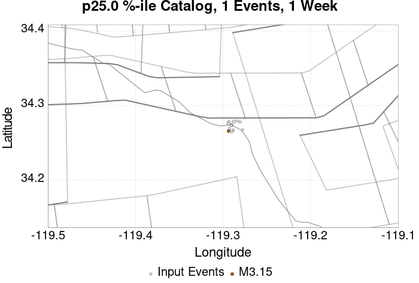 |  |  |  | 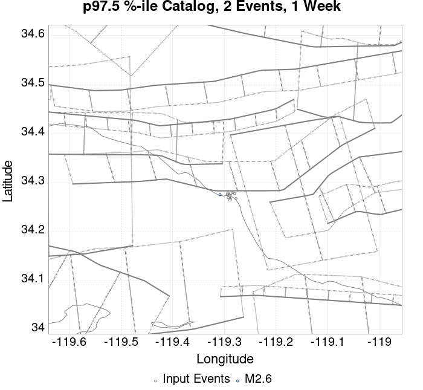 |  |  |  |  | 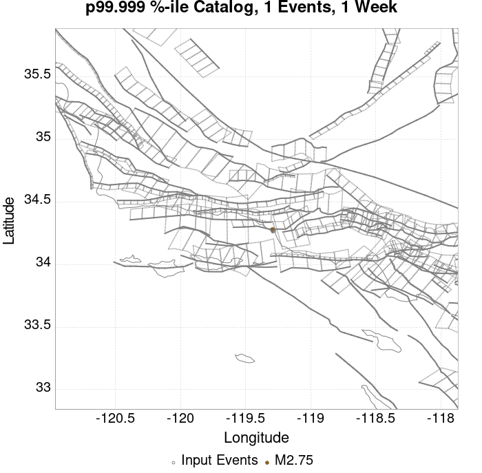 | |
| 1 Month |  |  |  |  |  |  |  | 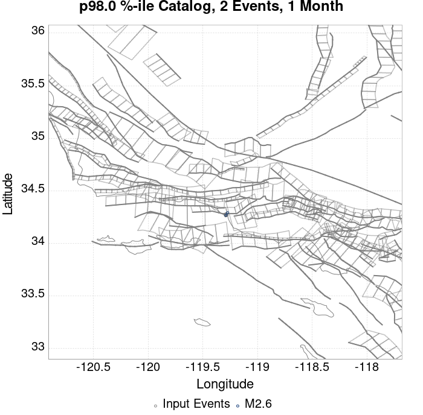 |  |  |  |  |
| 1 Year |  |  |  |  |  |  |  |  |  |  |  | 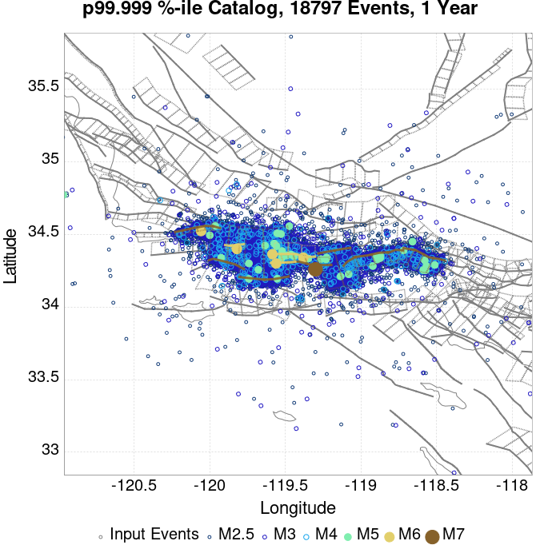 |
| 10 Year | 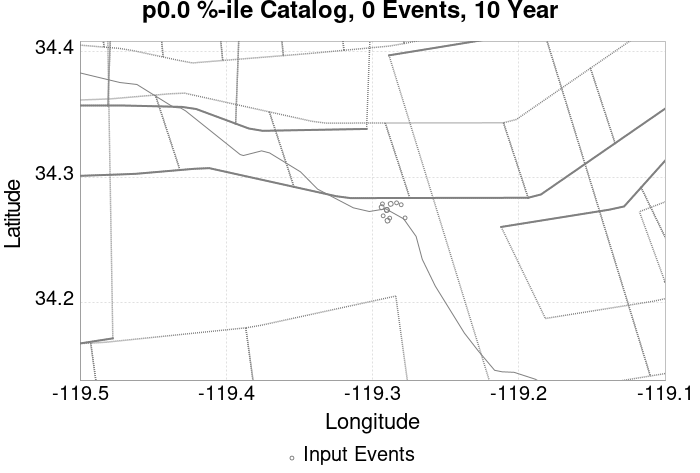 |  |  |  |  |  |  |  | 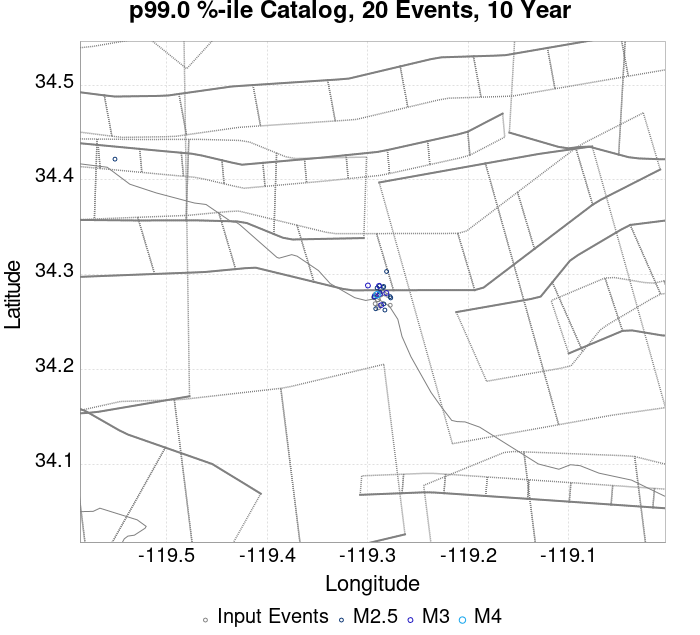 |  |  |
These plots compare simulated sequences with data from ComCat. All plots only consider events with hypocenters inside the ComCat region defined in the JSON input file.
Last updated at 2020/05/06 00:41:40 UTC, 179 days after the simulation start time.
Total matching ComCat events found: 19
| Incremental MND | Cumulative MND |
|---|---|
 |  |
These plots show the show the magnitude versus time probability function since simulation start. Observed event data lie on top, with those input to the simulation plotted as magenta circles and those that occurred after the simulation start time as cyan circles. Time is relative to the simulation start time. Probabilities are only shown above the minimum simulated magnitude, M=2.5.
 |
|---|
| 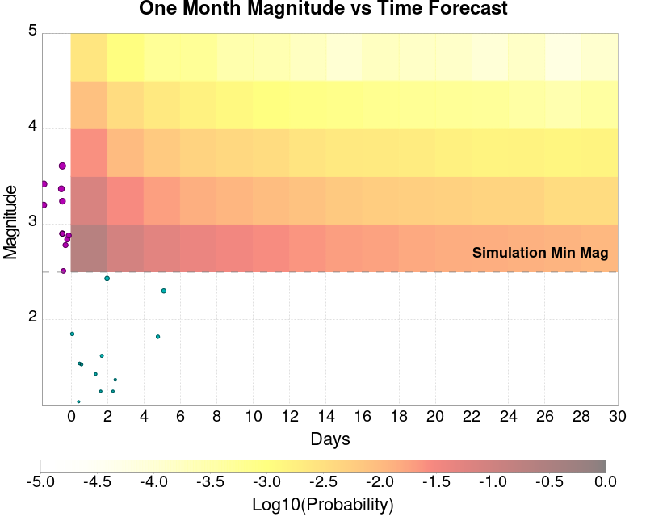 |
The following plots compare simulation results with ComCat data above a magnitude threshold. Plots labeled as M≥Mc(t) use the time-dependent magnitude of completeness (Mc) defined in Helmstetter et al. (2006), which is plotted below. In the case of multiple M≥5 ruptures, either as input to the simulation or in the comparison data, the maximum calculated time-dependent Mc is used. This time-dependent Mc function is plotted below.

Note: maps labeled 'Forecast' are for a duration that extends into the future, only forecasted values are plotted (ComCat data omitted)
| 1 Day | 1 Week | 1 Month | Current (179 Day) | Forecast: 1 Year | |
|---|---|---|---|---|---|
| M≥Mc(t) |  |  |  |  |  |
| Prob: 20.11%, Actual: 0 | Prob: 40.82%, Actual: 0 | Prob: 53.58%, Actual: 0 | Prob: 64.88%, Actual: 0 | Prob: 68.27% | |
| M≥2.5 | 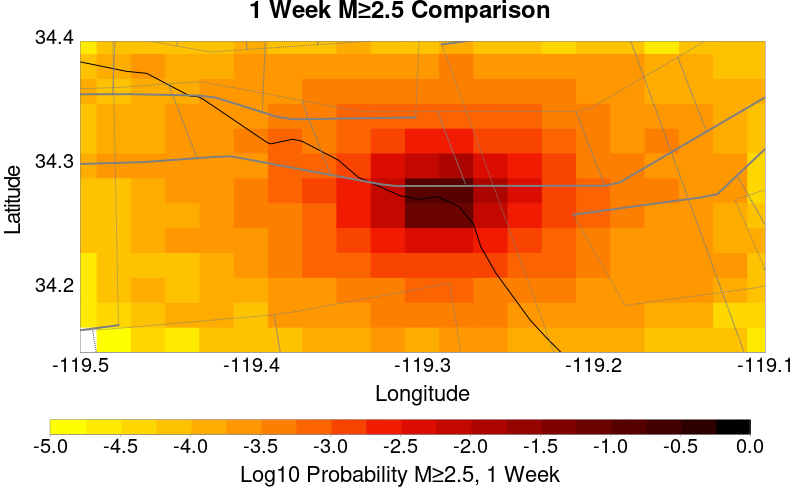 |  |  | 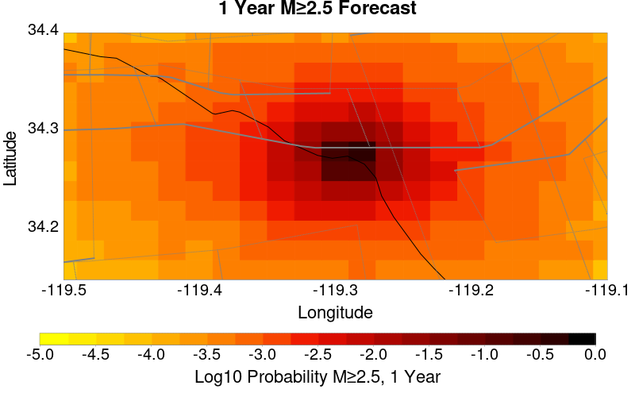 | |
| Prob: 20.11%, Actual: 0 | Prob: 40.82%, Actual: 0 | Prob: 53.58%, Actual: 0 | Prob: 64.88%, Actual: 0 | Prob: 68.27% | |
| M≥3 |  | 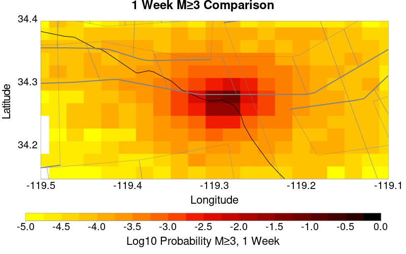 |  |  |  |
| Prob: 6.94%, Actual: 0 | Prob: 15.78%, Actual: 0 | Prob: 22.30%, Actual: 0 | Prob: 29.21%, Actual: 0 | Prob: 31.65% | |
| M≥3.5 |  |  |  |  |  |
| Prob: 2.28%, Actual: 0 | Prob: 5.47%, Actual: 0 | Prob: 7.99%, Actual: 0 | Prob: 10.91%, Actual: 0 | Prob: 11.96% | |
| M≥4 |  |  |  |  |  |
| Prob: 0.76%, Actual: 0 | Prob: 1.83%, Actual: 0 | Prob: 2.69%, Actual: 0 | Prob: 3.76%, Actual: 0 | Prob: 4.18% | |
| M≥4.5 |  |  |  | 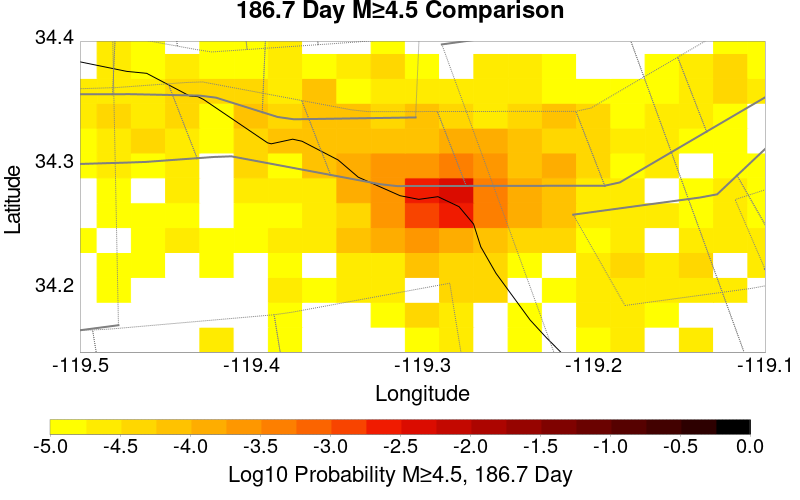 |  |
| Prob: 0.23%, Actual: 0 | Prob: 0.58%, Actual: 0 | Prob: 0.87%, Actual: 0 | Prob: 1.27%, Actual: 0 | Prob: 1.41% |
Note: maps labeled 'Forecast' are for a duration that extends into the future, only forecasted values are plotted (ComCat data omitted)
| 1 Day | 1 Week | 1 Month | Current (179 Day) | Forecast: 1 Year | |
|---|---|---|---|---|---|
| M≥Mc(t) |  |  | 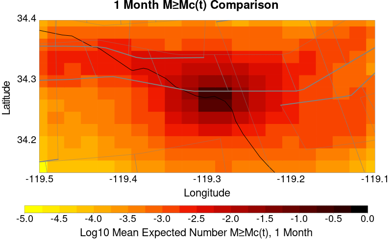 |  |  |
| Mean: 0.280, Actual: 0 | Mean: 0.822, Actual: 0 | Mean: 1.309, Actual: 0 | Mean: 2.033, Actual: 0 | Mean: 2.310 | |
| M≥2.5 | 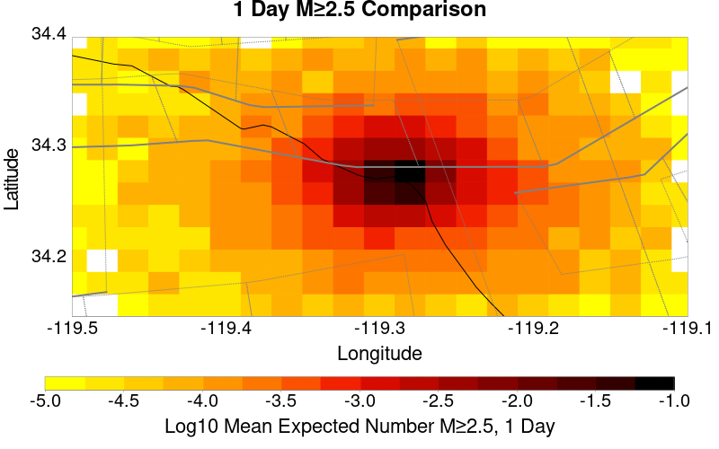 |  | 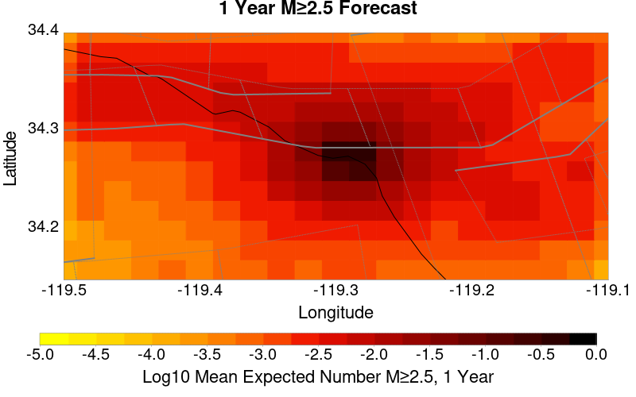 | ||
| Mean: 0.280, Actual: 0 | Mean: 0.822, Actual: 0 | Mean: 1.309, Actual: 0 | Mean: 2.033, Actual: 0 | Mean: 2.310 | |
| M≥3 |  |  |  |  |  |
| Mean: 0.087, Actual: 0 | Mean: 0.259, Actual: 0 | Mean: 0.413, Actual: 0 | Mean: 0.642, Actual: 0 | Mean: 0.729 | |
| M≥3.5 |  |  |  |  |  |
| Mean: 0.027, Actual: 0 | Mean: 0.082, Actual: 0 | Mean: 0.132, Actual: 0 | Mean: 0.205, Actual: 0 | Mean: 0.233 | |
| M≥4 |  |  |  |  |  |
| Mean: 8.56E-3, Actual: 0 | Mean: 0.026, Actual: 0 | Mean: 0.041, Actual: 0 | Mean: 0.064, Actual: 0 | Mean: 0.073 | |
| M≥4.5 |  |  |  |  |  |
| Mean: 2.59E-3, Actual: 0 | Mean: 7.91E-3, Actual: 0 | Mean: 0.013, Actual: 0 | Mean: 0.020, Actual: 0 | Mean: 0.023 |
| M≥Mc(t) | M≥2.5 | M≥3 | M≥3.5 | M≥4 | M≥4.5 |
|---|---|---|---|---|---|
 |  |  |  |  |  |
| Min Mag | 1 yr Triggered Ruptures (no spontaneous) | 10 yr Triggered Ruptures (no spontaneous) | 10 yr Triggered Ruptures (primary aftershocks only) |
|---|---|---|---|
| All Supra. Seis. |  |  |  |
| M≥6.5 |  |  |  |
| M≥7 | 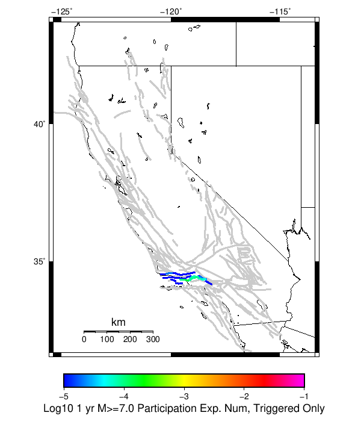 |  |  |
| M≥7.5 |  |  |  |
First 10 of 28 with matching ruptures shown
| Parent Name | Triggered 10 Year Mean Count | Triggered 1 Day Prob | Triggered 1 Day 95% Conf | Triggered 1 Week Prob | Triggered 1 Week 95% Conf | Triggered 1 Month Prob | Triggered 1 Month 95% Conf | Triggered 1 Year Prob | Triggered 1 Year 95% Conf | Triggered 10 Year Prob | Triggered 10 Year 95% Conf | Triggered 10 Year Primary Mean Count |
|---|---|---|---|---|---|---|---|---|---|---|---|---|
| Ventura-Pitas Point | 3.7E-4 | 0.000 (0.00%) | [0.00% 0.00%] | 1.30E-4 (0.01%) | [0.01% 0.02%] | 1.70E-4 (0.02%) | [0.01% 0.03%] | 2.60E-4 (0.03%) | [0.02% 0.04%] | 3.30E-4 (0.03%) | [0.02% 0.05%] | 1.7E-4 |
| Oak Ridge (Onshore) | 1.5E-4 | 0.000 (0.00%) | [0.00% 0.00%] | 4.00E-5 (0.00%) | [0.00% 0.01%] | 7.00E-5 (0.01%) | [0.00% 0.02%] | 1.30E-4 (0.01%) | [0.01% 0.02%] | 1.50E-4 (0.01%) | [0.01% 0.03%] | 9.0E-5 |
| Red Mountain | 9.0E-5 | 0.000 (0.00%) | [0.00% 0.00%] | 1.00E-5 (0.00%) | [0.00% 0.01%] | 2.00E-5 (0.00%) | [0.00% 0.01%] | 5.00E-5 (0.01%) | [0.00% 0.01%] | 8.00E-5 (0.01%) | [0.00% 0.02%] | 0.0 |
| Santa Susana alt 1 | 9.0E-5 | 0.000 (0.00%) | [0.00% 0.00%] | 3.00E-5 (0.00%) | [0.00% 0.01%] | 5.00E-5 (0.01%) | [0.00% 0.01%] | 7.00E-5 (0.01%) | [0.00% 0.02%] | 9.00E-5 (0.01%) | [0.00% 0.02%] | 5.0E-5 |
| San Cayetano | 8.0E-5 | 0.000 (0.00%) | [0.00% 0.00%] | 3.00E-5 (0.00%) | [0.00% 0.01%] | 4.00E-5 (0.00%) | [0.00% 0.01%] | 7.00E-5 (0.01%) | [0.00% 0.02%] | 8.00E-5 (0.01%) | [0.00% 0.02%] | 4.0E-5 |
| Mission Ridge-Arroyo Parida-Santa Ana | 7.0E-5 | 0.000 (0.00%) | [0.00% 0.00%] | 0.000 (0.00%) | [0.00% 0.00%] | 2.00E-5 (0.00%) | [0.00% 0.01%] | 3.00E-5 (0.00%) | [0.00% 0.01%] | 5.00E-5 (0.01%) | [0.00% 0.01%] | 0.0 |
| Santa Susana East (connector) | 6.0E-5 | 0.000 (0.00%) | [0.00% 0.00%] | 1.00E-5 (0.00%) | [0.00% 0.01%] | 3.00E-5 (0.00%) | [0.00% 0.01%] | 5.00E-5 (0.01%) | [0.00% 0.01%] | 6.00E-5 (0.01%) | [0.00% 0.01%] | 2.0E-5 |
| Santa Ynez (East) | 6.0E-5 | 0.000 (0.00%) | [0.00% 0.00%] | 0.000 (0.00%) | [0.00% 0.00%] | 1.00E-5 (0.00%) | [0.00% 0.01%] | 5.00E-5 (0.01%) | [0.00% 0.01%] | 6.00E-5 (0.01%) | [0.00% 0.01%] | 0.0 |
| Channel Islands Thrust | 3.0E-5 | 0.000 (0.00%) | [0.00% 0.00%] | 0.000 (0.00%) | [0.00% 0.00%] | 0.000 (0.00%) | [0.00% 0.00%] | 2.00E-5 (0.00%) | [0.00% 0.01%] | 3.00E-5 (0.00%) | [0.00% 0.01%] | 0.0 |
| Northridge | 3.0E-5 | 0.000 (0.00%) | [0.00% 0.00%] | 1.00E-5 (0.00%) | [0.00% 0.01%] | 2.00E-5 (0.00%) | [0.00% 0.01%] | 3.00E-5 (0.00%) | [0.00% 0.01%] | 3.00E-5 (0.00%) | [0.00% 0.01%] | 3.0E-5 |
First 10 of 21 with matching ruptures shown
| Parent Name | Triggered 10 Year Mean Count | Triggered 1 Day Prob | Triggered 1 Day 95% Conf | Triggered 1 Week Prob | Triggered 1 Week 95% Conf | Triggered 1 Month Prob | Triggered 1 Month 95% Conf | Triggered 1 Year Prob | Triggered 1 Year 95% Conf | Triggered 10 Year Prob | Triggered 10 Year 95% Conf | Triggered 10 Year Primary Mean Count |
|---|---|---|---|---|---|---|---|---|---|---|---|---|
| Ventura-Pitas Point | 2.7E-4 | 0.000 (0.00%) | [0.00% 0.00%] | 9.00E-5 (0.01%) | [0.00% 0.02%] | 1.20E-4 (0.01%) | [0.01% 0.02%] | 1.90E-4 (0.02%) | [0.01% 0.03%] | 2.50E-4 (0.03%) | [0.02% 0.04%] | 1.4E-4 |
| Oak Ridge (Onshore) | 1.5E-4 | 0.000 (0.00%) | [0.00% 0.00%] | 4.00E-5 (0.00%) | [0.00% 0.01%] | 7.00E-5 (0.01%) | [0.00% 0.02%] | 1.30E-4 (0.01%) | [0.01% 0.02%] | 1.50E-4 (0.01%) | [0.01% 0.03%] | 9.0E-5 |
| Santa Susana alt 1 | 9.0E-5 | 0.000 (0.00%) | [0.00% 0.00%] | 3.00E-5 (0.00%) | [0.00% 0.01%] | 5.00E-5 (0.01%) | [0.00% 0.01%] | 7.00E-5 (0.01%) | [0.00% 0.02%] | 9.00E-5 (0.01%) | [0.00% 0.02%] | 5.0E-5 |
| San Cayetano | 8.0E-5 | 0.000 (0.00%) | [0.00% 0.00%] | 3.00E-5 (0.00%) | [0.00% 0.01%] | 4.00E-5 (0.00%) | [0.00% 0.01%] | 7.00E-5 (0.01%) | [0.00% 0.02%] | 8.00E-5 (0.01%) | [0.00% 0.02%] | 4.0E-5 |
| Red Mountain | 6.0E-5 | 0.000 (0.00%) | [0.00% 0.00%] | 1.00E-5 (0.00%) | [0.00% 0.01%] | 2.00E-5 (0.00%) | [0.00% 0.01%] | 4.00E-5 (0.00%) | [0.00% 0.01%] | 6.00E-5 (0.01%) | [0.00% 0.01%] | 0.0 |
| Santa Susana East (connector) | 6.0E-5 | 0.000 (0.00%) | [0.00% 0.00%] | 1.00E-5 (0.00%) | [0.00% 0.01%] | 3.00E-5 (0.00%) | [0.00% 0.01%] | 5.00E-5 (0.01%) | [0.00% 0.01%] | 6.00E-5 (0.01%) | [0.00% 0.01%] | 2.0E-5 |
| Channel Islands Thrust | 3.0E-5 | 0.000 (0.00%) | [0.00% 0.00%] | 0.000 (0.00%) | [0.00% 0.00%] | 0.000 (0.00%) | [0.00% 0.00%] | 2.00E-5 (0.00%) | [0.00% 0.01%] | 3.00E-5 (0.00%) | [0.00% 0.01%] | 0.0 |
| Northridge | 3.0E-5 | 0.000 (0.00%) | [0.00% 0.00%] | 1.00E-5 (0.00%) | [0.00% 0.01%] | 2.00E-5 (0.00%) | [0.00% 0.01%] | 3.00E-5 (0.00%) | [0.00% 0.01%] | 3.00E-5 (0.00%) | [0.00% 0.01%] | 3.0E-5 |
| Santa Cruz Island | 2.0E-5 | 0.000 (0.00%) | [0.00% 0.00%] | 0.000 (0.00%) | [0.00% 0.00%] | 0.000 (0.00%) | [0.00% 0.00%] | 1.00E-5 (0.00%) | [0.00% 0.01%] | 2.00E-5 (0.00%) | [0.00% 0.01%] | 0.0 |
| Santa Ynez (West) | 2.0E-5 | 0.000 (0.00%) | [0.00% 0.00%] | 0.000 (0.00%) | [0.00% 0.00%] | 1.00E-5 (0.00%) | [0.00% 0.01%] | 2.00E-5 (0.00%) | [0.00% 0.01%] | 2.00E-5 (0.00%) | [0.00% 0.01%] | 1.0E-5 |
First 10 of 18 with matching ruptures shown
| Parent Name | Triggered 10 Year Mean Count | Triggered 1 Day Prob | Triggered 1 Day 95% Conf | Triggered 1 Week Prob | Triggered 1 Week 95% Conf | Triggered 1 Month Prob | Triggered 1 Month 95% Conf | Triggered 1 Year Prob | Triggered 1 Year 95% Conf | Triggered 10 Year Prob | Triggered 10 Year 95% Conf | Triggered 10 Year Primary Mean Count |
|---|---|---|---|---|---|---|---|---|---|---|---|---|
| Ventura-Pitas Point | 1.9E-4 | 0.000 (0.00%) | [0.00% 0.00%] | 6.00E-5 (0.01%) | [0.00% 0.01%] | 9.00E-5 (0.01%) | [0.00% 0.02%] | 1.50E-4 (0.01%) | [0.01% 0.03%] | 1.80E-4 (0.02%) | [0.01% 0.03%] | 1.0E-4 |
| Oak Ridge (Onshore) | 1.5E-4 | 0.000 (0.00%) | [0.00% 0.00%] | 4.00E-5 (0.00%) | [0.00% 0.01%] | 7.00E-5 (0.01%) | [0.00% 0.02%] | 1.30E-4 (0.01%) | [0.01% 0.02%] | 1.50E-4 (0.01%) | [0.01% 0.03%] | 9.0E-5 |
| Santa Susana alt 1 | 9.0E-5 | 0.000 (0.00%) | [0.00% 0.00%] | 3.00E-5 (0.00%) | [0.00% 0.01%] | 5.00E-5 (0.01%) | [0.00% 0.01%] | 7.00E-5 (0.01%) | [0.00% 0.02%] | 9.00E-5 (0.01%) | [0.00% 0.02%] | 5.0E-5 |
| San Cayetano | 8.0E-5 | 0.000 (0.00%) | [0.00% 0.00%] | 3.00E-5 (0.00%) | [0.00% 0.01%] | 4.00E-5 (0.00%) | [0.00% 0.01%] | 7.00E-5 (0.01%) | [0.00% 0.02%] | 8.00E-5 (0.01%) | [0.00% 0.02%] | 4.0E-5 |
| Santa Susana East (connector) | 6.0E-5 | 0.000 (0.00%) | [0.00% 0.00%] | 1.00E-5 (0.00%) | [0.00% 0.01%] | 3.00E-5 (0.00%) | [0.00% 0.01%] | 5.00E-5 (0.01%) | [0.00% 0.01%] | 6.00E-5 (0.01%) | [0.00% 0.01%] | 2.0E-5 |
| Northridge | 3.0E-5 | 0.000 (0.00%) | [0.00% 0.00%] | 1.00E-5 (0.00%) | [0.00% 0.01%] | 2.00E-5 (0.00%) | [0.00% 0.01%] | 3.00E-5 (0.00%) | [0.00% 0.01%] | 3.00E-5 (0.00%) | [0.00% 0.01%] | 3.0E-5 |
| Red Mountain | 2.0E-5 | 0.000 (0.00%) | [0.00% 0.00%] | 0.000 (0.00%) | [0.00% 0.00%] | 1.00E-5 (0.00%) | [0.00% 0.01%] | 1.00E-5 (0.00%) | [0.00% 0.01%] | 2.00E-5 (0.00%) | [0.00% 0.01%] | 0.0 |
| Santa Ynez (West) | 2.0E-5 | 0.000 (0.00%) | [0.00% 0.00%] | 0.000 (0.00%) | [0.00% 0.00%] | 1.00E-5 (0.00%) | [0.00% 0.01%] | 2.00E-5 (0.00%) | [0.00% 0.01%] | 2.00E-5 (0.00%) | [0.00% 0.01%] | 1.0E-5 |
| Sisar | 2.0E-5 | 0.000 (0.00%) | [0.00% 0.00%] | 0.000 (0.00%) | [0.00% 0.00%] | 1.00E-5 (0.00%) | [0.00% 0.01%] | 1.00E-5 (0.00%) | [0.00% 0.01%] | 2.00E-5 (0.00%) | [0.00% 0.01%] | 2.0E-5 |
| Channel Islands Thrust | 1.0E-5 | 0.000 (0.00%) | [0.00% 0.00%] | 0.000 (0.00%) | [0.00% 0.00%] | 0.000 (0.00%) | [0.00% 0.00%] | 0.000 (0.00%) | [0.00% 0.00%] | 1.00E-5 (0.00%) | [0.00% 0.01%] | 0.0 |
First 10 of 11 with matching ruptures shown
| Parent Name | Triggered 10 Year Mean Count | Triggered 1 Day Prob | Triggered 1 Day 95% Conf | Triggered 1 Week Prob | Triggered 1 Week 95% Conf | Triggered 1 Month Prob | Triggered 1 Month 95% Conf | Triggered 1 Year Prob | Triggered 1 Year 95% Conf | Triggered 10 Year Prob | Triggered 10 Year 95% Conf | Triggered 10 Year Primary Mean Count |
|---|---|---|---|---|---|---|---|---|---|---|---|---|
| Oak Ridge (Onshore) | 1.1E-4 | 0.000 (0.00%) | [0.00% 0.00%] | 3.00E-5 (0.00%) | [0.00% 0.01%] | 6.00E-5 (0.01%) | [0.00% 0.01%] | 9.00E-5 (0.01%) | [0.00% 0.02%] | 1.10E-4 (0.01%) | [0.01% 0.02%] | 7.0E-5 |
| Ventura-Pitas Point | 1.1E-4 | 0.000 (0.00%) | [0.00% 0.00%] | 3.00E-5 (0.00%) | [0.00% 0.01%] | 6.00E-5 (0.01%) | [0.00% 0.01%] | 9.00E-5 (0.01%) | [0.00% 0.02%] | 1.10E-4 (0.01%) | [0.01% 0.02%] | 7.0E-5 |
| Santa Susana alt 1 | 9.0E-5 | 0.000 (0.00%) | [0.00% 0.00%] | 3.00E-5 (0.00%) | [0.00% 0.01%] | 5.00E-5 (0.01%) | [0.00% 0.01%] | 7.00E-5 (0.01%) | [0.00% 0.02%] | 9.00E-5 (0.01%) | [0.00% 0.02%] | 5.0E-5 |
| Santa Susana East (connector) | 6.0E-5 | 0.000 (0.00%) | [0.00% 0.00%] | 1.00E-5 (0.00%) | [0.00% 0.01%] | 3.00E-5 (0.00%) | [0.00% 0.01%] | 5.00E-5 (0.01%) | [0.00% 0.01%] | 6.00E-5 (0.01%) | [0.00% 0.01%] | 2.0E-5 |
| San Cayetano | 5.0E-5 | 0.000 (0.00%) | [0.00% 0.00%] | 1.00E-5 (0.00%) | [0.00% 0.01%] | 2.00E-5 (0.00%) | [0.00% 0.01%] | 4.00E-5 (0.00%) | [0.00% 0.01%] | 5.00E-5 (0.01%) | [0.00% 0.01%] | 3.0E-5 |
| Northridge | 3.0E-5 | 0.000 (0.00%) | [0.00% 0.00%] | 1.00E-5 (0.00%) | [0.00% 0.01%] | 2.00E-5 (0.00%) | [0.00% 0.01%] | 3.00E-5 (0.00%) | [0.00% 0.01%] | 3.00E-5 (0.00%) | [0.00% 0.01%] | 3.0E-5 |
| Sisar | 2.0E-5 | 0.000 (0.00%) | [0.00% 0.00%] | 0.000 (0.00%) | [0.00% 0.00%] | 1.00E-5 (0.00%) | [0.00% 0.01%] | 1.00E-5 (0.00%) | [0.00% 0.01%] | 2.00E-5 (0.00%) | [0.00% 0.01%] | 2.0E-5 |
| Pitas Point (Lower West) | 1.0E-5 | 0.000 (0.00%) | [0.00% 0.00%] | 0.000 (0.00%) | [0.00% 0.00%] | 1.00E-5 (0.00%) | [0.00% 0.01%] | 1.00E-5 (0.00%) | [0.00% 0.01%] | 1.00E-5 (0.00%) | [0.00% 0.01%] | 1.0E-5 |
| Pitas Point (Lower)-Montalvo | 1.0E-5 | 0.000 (0.00%) | [0.00% 0.00%] | 0.000 (0.00%) | [0.00% 0.00%] | 1.00E-5 (0.00%) | [0.00% 0.01%] | 1.00E-5 (0.00%) | [0.00% 0.01%] | 1.00E-5 (0.00%) | [0.00% 0.01%] | 1.0E-5 |
| Santa Ynez (West) | 1.0E-5 | 0.000 (0.00%) | [0.00% 0.00%] | 0.000 (0.00%) | [0.00% 0.00%] | 1.00E-5 (0.00%) | [0.00% 0.01%] | 1.00E-5 (0.00%) | [0.00% 0.01%] | 1.00E-5 (0.00%) | [0.00% 0.01%] | 1.0E-5 |
The first 5 sections (sorted by trigger rate) are plotted below. All fault MPDs are available here
| 1 Week | 1 Month | 1 Year | 10 Year |
|---|---|---|---|
 |  |  |  |
 |  | 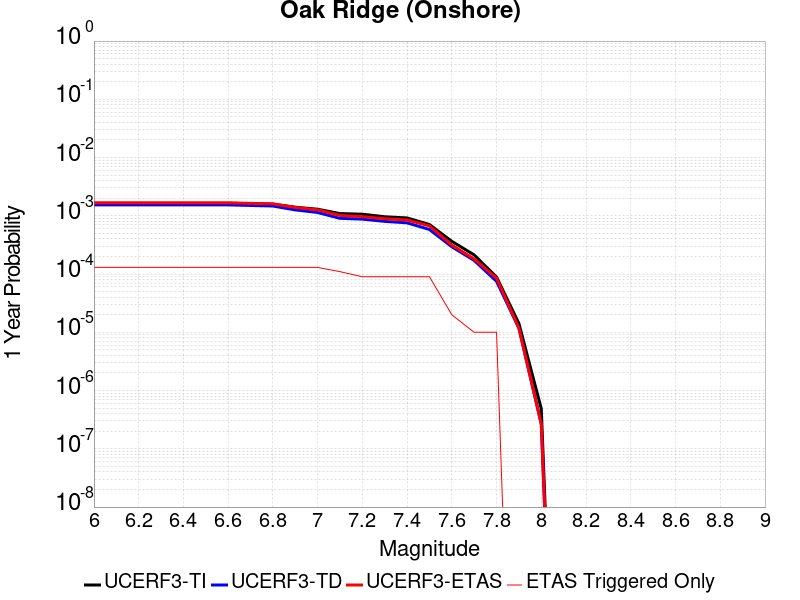 |  |
 |  |  |  |
 |  |  |  |
 |  |  | 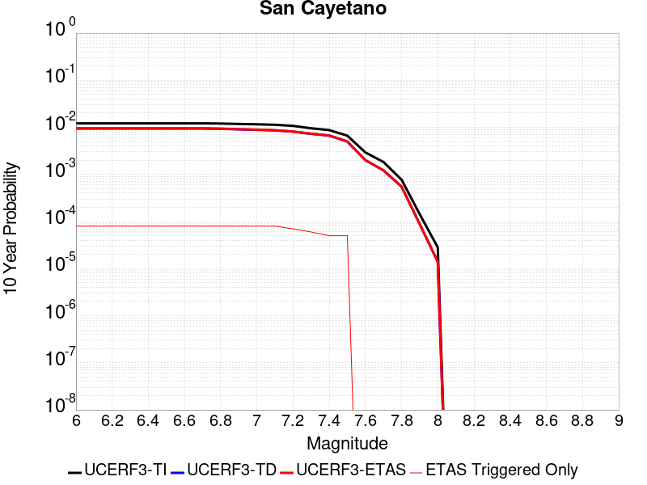 |
| Min Mag | Triggered Ruptures (no spontaneous) | Triggered Ruptures (primary aftershocks only) |
|---|---|---|
| M≥2.5 |  |  |
| M≥5 |  |  |
| M≥6 |  |  |
| M≥7 |  |  |
{
"numSimulations": 100000,
"duration": 10.0,
"startTimeMillis": 1573260807250,
"includeSpontaneous": false,
"randomSeed": 1573260806419,
"binaryOutput": true,
"binaryOutputFilters": [
{
"prefix": "results_complete",
"descendantsOnly": false
},
{
"prefix": "results_m5_preserve_chain",
"minMag": 5.0,
"preserveChainBelowMag": true,
"descendantsOnly": false
}
],
"forceRecalc": false,
"simulationName": "ComCat data 1.5 d after ci38229234, Custom Region, Point Sources",
"numRetries": 3,
"outputDir": "${ETAS_SIM_DIR}/2019_11_08-ComCatdata1p5dafterci38229234_CustomRegion_PointSources",
"treatTriggerCatalogAsSpontaneous": false,
"triggerRuptures": [
{
"occurrenceTimeMillis": 1573131521630,
"comcatEventID": "ci38229234",
"mag": 3.2,
"latitude": 34.274,
"longitude": -119.29016670000001,
"depth": 11.41
},
{
"occurrenceTimeMillis": 1573131939400,
"comcatEventID": "ci38229250",
"mag": 3.42,
"latitude": 34.2761667,
"longitude": -119.29366670000002,
"depth": 14.56
},
{
"occurrenceTimeMillis": 1573215012790,
"comcatEventID": "ci38231562",
"mag": 3.37,
"latitude": 34.2655,
"longitude": -119.2896667,
"depth": 11.42
},
{
"occurrenceTimeMillis": 1573219757800,
"comcatEventID": "ci38231770",
"mag": 2.9,
"latitude": 34.2693333,
"longitude": -119.2926667,
"depth": 13.49
},
{
"occurrenceTimeMillis": 1573219757830,
"comcatEventID": "us6000696e",
"mag": 2.9,
"latitude": 34.2675,
"longitude": -119.28820000000002,
"depth": 10.05
},
{
"occurrenceTimeMillis": 1573219778880,
"comcatEventID": "ci38231786",
"mag": 3.61,
"latitude": 34.2788333,
"longitude": -119.2875,
"depth": 11.51
},
{
"occurrenceTimeMillis": 1573220240800,
"comcatEventID": "ci38231834",
"mag": 3.24,
"latitude": 34.274,
"longitude": -119.29016670000001,
"depth": 11.31
},
{
"occurrenceTimeMillis": 1573224888510,
"comcatEventID": "ci38232042",
"mag": 2.51,
"latitude": 34.2788333,
"longitude": -119.2931667,
"depth": 10.97
},
{
"occurrenceTimeMillis": 1573234683240,
"comcatEventID": "ci38232370",
"mag": 2.78,
"latitude": 34.2781667,
"longitude": -119.2803333,
"depth": 10.83
},
{
"occurrenceTimeMillis": 1573242966290,
"comcatEventID": "ci38232658",
"mag": 2.84,
"latitude": 34.2676667,
"longitude": -119.2776667,
"depth": 10.65
},
{
"occurrenceTimeMillis": 1573250102220,
"comcatEventID": "ci38232922",
"mag": 2.88,
"latitude": 34.2796667,
"longitude": -119.2835,
"depth": 12.73
}
],
"cacheDir": "${ETAS_LAUNCHER}/inputs/cache_fm3p1_ba",
"fssFile": "${ETAS_LAUNCHER}/inputs/2013_05_10-ucerf3p3-production-10runs_COMPOUND_SOL_FM3_1_SpatSeisU3_MEAN_BRANCH_AVG_SOL.zip",
"probModel": "FULL_TD",
"applySubSeisForSupraNucl": true,
"totRateScaleFactor": 1.14,
"gridSeisCorr": true,
"timeIndependentERF": false,
"griddedOnly": false,
"imposeGR": false,
"includeIndirectTriggering": true,
"gridSeisDiscr": 0.1,
"catalogCompletenessModel": "RELAXED",
"configCommand": "u3etas_comcat_config_builder.sh --start-at ci38229234 --end-now --region 34.4,-119.5,34.15,-119.1 --num-simulations 100000 --finite-surf-shakemap --finite-surf-shakemap-min-mag 6 --hpc-site USC_HPC --nodes 17 --hours 24 --queue scec",
"configTime": 1573260806419,
"comcatMetadata": {
"region": {
"minLatitude": 34.149999999999,
"maxLatitude": 34.400000000001,
"minLongitude": -119.500000000001,
"maxLongitude": -119.099999999999
},
"minDepth": -10.0,
"maxDepth": 24.0,
"minMag": 2.5,
"startTime": 1573131520630,
"endTime": 1573260806250
}
}